iTest User's Guide
AutomationPanel Operator's Guide
Product Version 4.5
Prepared By
ADT Software Engineering
A&D Confidential Document Distributable only to A&D Customers
Copyright A&D Company, Limited
A&D Technology Inc.
AutomationPanel is a modern GUI for developing user interfaces for A&D Technology products. iTest 3.5 is the first version to include this interface. When AutomationPanel is first launched, the Select Solution dialog displays. For more information about the Select Solution dialog, refer to the Select Support documentation.
 |
NOTE: | Previous applications not converted by A&D Technology to support AutomationPanel must still use iTest Console as the primary startup program. |
The purpose of this document is to discuss the GUI and provide instructions for adding, editing, and using the different aspects of the application. When you launch Solution.Demo in AutomationPanel, a sample layout will appear that contains a channel list and other visual components.
Solution.Demo Interface
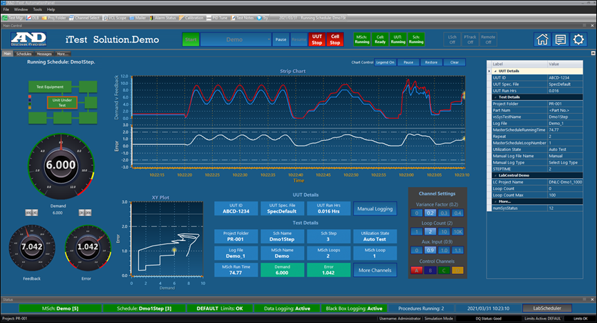
User documentation can be accessed through AutomationPanel by selecting Help > Help... in the menu tab. These documents provide instructions for using iTest in various ways. In addition, documentation for how to use each panel can be accessed through Property Manager by using the Help... right-click option.
Access Help Documentation
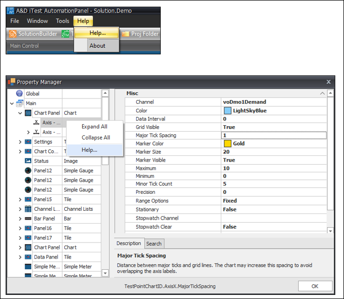
Layouts are the primary container for panels and are used to create custom user interfaces. Layouts tab for visual organization. New layouts do not contain panels, but these can be added once the layout has been created.
To create a new layout:
To open a layout, select File > Open > Layout... from the main menu.
Open Layout
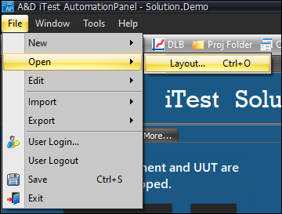
The Open Layout dialog will display.
Open Layout Dialog
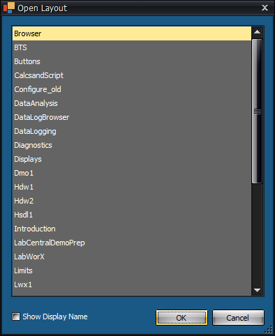
The Show Display Name checkbox on the Open Layout dialog shows the layout's Display Name and File Name in two separate columns when checked. When this box isn't checked, only the File Name will be displayed.
Show Display Name
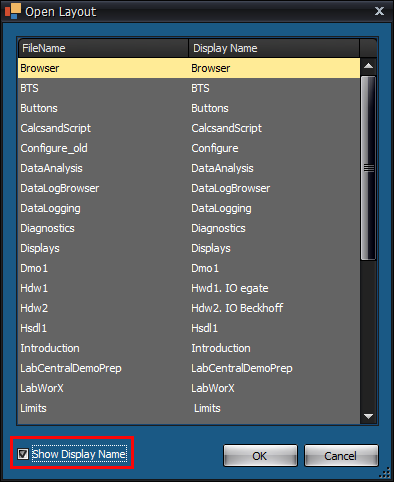
To delete a layout, right-click the layout tab and select Delete.
Deleting a Layout
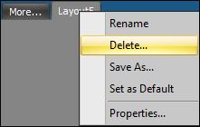
A message will appear asking for confirmation. Select OK to delete the layout. Select Cancel to cancel the delete layout process.
|
NOTE: | Deleting a layout will delete the layout file from disk. |
Delete Layout Message
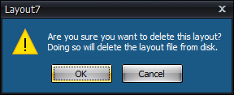
In order to delete new layouts, the new layout must be saved first. Once this is done, the Delete option will appear in the right-click options.
By default, layouts are displayed as tabs. You can detach a layout from its original position by clicking and dragging the layout away from its tabbed location. These detached layouts are referred to as floating layouts.
Floating Layout
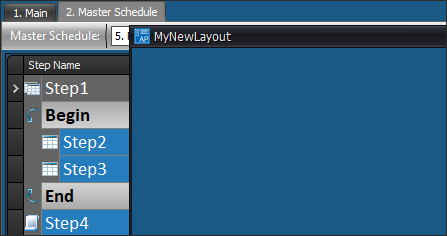
Once you have floated a layout, the layout can be minimized, moved to another monitor, or docked back to the tabbed area by dragging the layout back to its original location. You may also re-dock the layout using the main menu option Window > Dock All Layouts.
Docking All Layouts
|
NOTE: | You cannot rename a floating layout. To rename a floating layout, you must re-dock it first. |
Floating layouts can be opened as modal layouts. When a modal layout is open, interaction with other layouts and AutomationPanel will be blocked. In other words, only the modal layout will be interactable. There can only be one modal layout active at a time.
To open a floating layout as a modal layout, set Modal=TRUE in the following mailslot message:
$OPENLAYOUT;<layoutname> [StatusChan=<statuschan>] [Modal=<modal>]
|
NOTE: | Modal layouts do not suppress closing AutomationPanel via a $EXIT message. |
Modal layouts are not dockable. Until a modal layout is closed, further $OPENLAYOUT messages will be ignored. When trying to interact with other layouts before the modal layout is closed, the modal layout will flash and a system sound will chime.
Borderless layouts are best edited using SolutionBuilder. The SolutionBuilder interface enables you to add panels, remove panels, move panels, modify appearance, and set properties. In addition, borders can be enabled or disabled using the Show Panel Borders property; this setting is only available in SolutionBuilder. To edit a borderless layout, right-click the layout you would like to modify and click Edit to launch SolutionBuilder.
Layouts can be imported to or exported from different solutions or test systems.
To import a layout:
To export a layout, make sure the layout you want to export is the current layout open in AutomationPanel, and then do the following:

To manage the properties of your layout, right-click the layout name and select Properties.
Navigating to Layout Properties
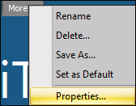
The Property Manager Dialog for the layout displays.
Viewing the Property Manager Dialog
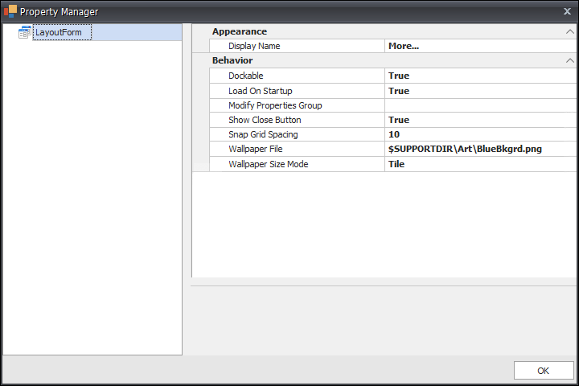
Modify the dialog properties using the descriptions provided in the table below.
Property Manager Layout Dialog Descriptions
| Property | Value | Description |
| Display Name | String | Name shown in the tab for the layout in AutomationPanel. It can be localized by using a string table macro from a language translation file. By default, this field is blank and uses the file name in the layout's tab. |
| Dockable | True/False | When this setting is true, you can dock (attach) the layout to a specific location on the interface. |
| Load On Startup | True/False | When this setting is true, the layout loads automatically upon startup. In addition, you will be prompted to clear this setting when closing a layout; this prompt does not display if this setting is set to false. |
| Modify Properties Group | Name of iTest Security Group | When LabCentral security permissions "AP: Manage Panels" and "AP: Modify Panel Properties" are FALSE, setting this property to the name of an iTest security group enables only users of that security group to modify the panels in the layout. |
| Show Close Button | True/False | Shows/hides the close button when the layout is floating. This option is only available for floating layouts in AutomationPanel. |
| Wallpaper File | File Type | Enables you to browse for a file to display as the background image of the layout. |
| Wallpaper Size Mode | None Tile Center Stretch Zoom |
This setting defines the way the wallpaper is displayed in the layout. |
Example:
Wallpaper Background Image for a Layout
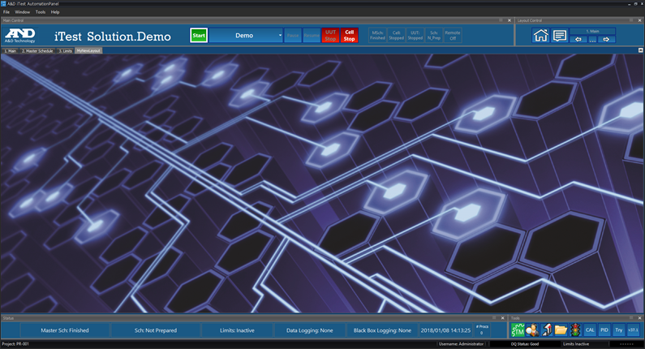
Panels are individual tools that can be added to layouts or used as toolbars. This section describes the primary panels and how to use them as well as methods for displaying database information and interacting with the various A&D Technology systems.
|
NOTE: | Panels cannot be added to borderless layouts. You must use SolutionBuilder in order to add panels to these layouts. |
To add a new panel type or template to a layout:
Panels can be saved as templates and used as a base reference for future use. When you save a configured panel as a template, the panel retains the configured settings as its default values. Templates can be saved to $SUPPORTDIR\Panels or $EXECUTEDIR\Panels. If present, templates from these locations will appear in the Add New Panel dialog under Templates > Solution and Templates > System respectively.
|
NOTE: | If no templates are found, the Add New Panel dialog will not show the Templates node or empty sub-folders. |
To save a panel as a template, do the following:
Once your panel template has been saved, you can add it to a layout in AutomationPanel by using the Add a New Panel dialog. This does not require a restart. The new panel is listed in the Templates folder at the top of the panel list.
Panel Template
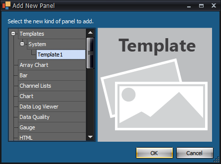
Default panels have preview images that display on the Add New Panel dialog. You can add a preview image for your own customized panel templates. Images should be squared in dimensions and added to the Panels folder where your panel template is located (i.e., $EXECUTEDIR\Panels or $SUPPORTDIR\Panels). The image file must be the same name as the panel and use the .png extension.
Panel Preview
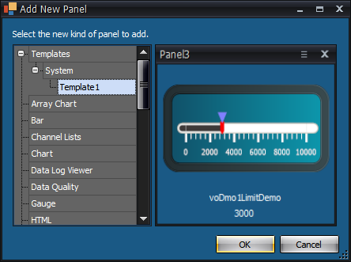
If you have a layout with multiple panels stacked on top of one another, you can change which panel displays on top by selecting Windows > Panel Name from the main menu, where Panel Name is the name of the panel you want to display above the others. This will cause the selected panel to display above the other panels that were layered on top of it.
View Layered Panel
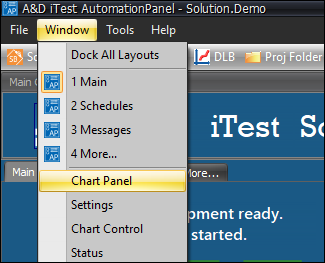
To view panels that have the Visible=False setting, right-click within a layout and select Show Invisible Panels. This allows you to view any applicable panels without having to change the Visible property setting.
View Invisible Panels
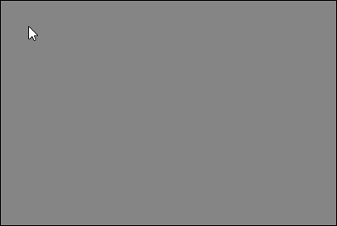
The sections below describe the panels that can be added and configured in AutomationPanel. Your particular installation may or may not include all panel types described in the sections below. Properties that support modification at runtime by channel value or mailslot message are indicated by a check mark in the Automatable column. For more information, refer to the Property Automation section below.
The following actions are available for all panels:
Panel Actions
| Action | Description |
| Move | Enables you to move the panel in front of or behind other panels. |
| Duplicate | Enables you to duplicate the panel to an open layout or toolbar. The Show Panel Borders property must be set to True in the layout's Property Manager in order to duplicate the panel to the layout. The Lock Toolbars property must be set to False in the Global Property Manager in order to duplicate the panel to an open toolbar. |
| Save as Template | Enables you to save the panel as a template for re-use. |
| Properties | Launches the Property Manager dialog. |
The Array Chart panel allows you to chart all of the elements from a Virtual Output Array channel. When a channel is selected, its elements will appear on the chart in bar format. The chart's X axis is the element index and its Y axis is the fitted range of values from the elements. The Y axis resizes dynamically based on the maximum and minimum of the plotted data from all of the elements. It is not possible to select a subset of the elements from a Virtual Output Array channel.
Array Chart Panel
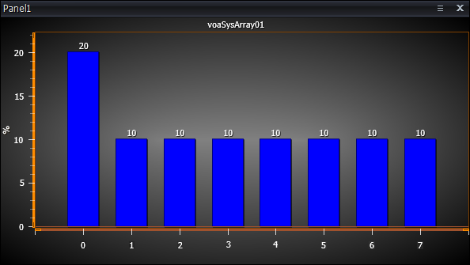
Array Chart Panel Properties
| Name | Range of Values | Automatable | Automation Property Name | Description |
| Appearance | ||||
|---|---|---|---|---|
| Background Color | Color Value |  |
BackgroundColor | Color used for the chart's background. Refer to the Array Chart Panel Themes section below for examples of each style. |
| Bar Color | Color Value | |
BarColor | Color used for the chart's bars. Refer to the Array Chart Panel Themes section below for examples of each style. |
| Bar Value Color | Color Value | |
BarValueColor | Text color used for the bar value. Refer to the Array Chart Panel Themes section below for examples of each style. |
| Bar Value Font | Font Value | - | - | Font used for the bar value. Refer to the Array Chart Panel Themes section below for examples of each style. |
| Font | Font Value | - | - | Font used for the graph's title, X axis label, and Y axis label. Refer to the Array Chart Panel Themes section below for examples of each style. |
| Foreground Color | Color Value | |
ForegroundColor | Text color used for the graph's title, X axis label, and Y axis label. Refer to the Array Chart Panel Themes section below for examples of each style. |
| Maximum Elements | Numerical Value | |
MaxElements | The number of elements to be displayed starting with index 0 (e.g., "4" results in elements 0 - 3 being displayed). If the value is less than or equal to 0, all elements will be shown. Refer to the Array Chart Panel Themes section below for examples of each style. |
| Name | Title bar name | - | - | The name displayed in the title bar of the panel. Refer to the Array Chart Panel Themes section below for examples of each style. |
| Show Bar Value | True/False | - | - | Show or hide the bar values. Refer to the Array Chart Panel Themes section below for examples of each style. |
| Show X Axis Grid | True/False | - | - | Show or hide the dotted grid line for the X axis. Refer to the Array Chart Panel Themes section below for examples of each style. |
| Show Y Axis Grid | True/False | - | - | Show or hide the dotted grid line for the Y axis. Refer to the Array Chart Panel Themes section below for examples of each style. |
| Visible | True/False | |
ParentVisible | Show or hide the entire panel. |
| Data | ||||
| Value Channel | Channel Name | |
ValueChannel | Virtual output array channel to be displayed on the chart. |
| Miscellaneous | ||||
| Automation ID | String/Integer | - | - | The ID used to automate modifications to panel properties at runtime using channels or mailslot messages. Properties that support automation will display the <ID>.<PropertyName> value at the bottom of the Property Manager dialog. |
| Group ID | String/Integer | - | - | Groups panels together such that clicking on the visual representation of the panel in the Layout Editor selects all panels sharing the same Group ID. Clear this setting to remove the panel from the group. |
| Panel Location | Numeric,Numeric | |
PanelLocation | The X,Y coordinates of the upper left-hand corner of the panel. These coordinates are two numeric values separated by a comma (e.g., 0,0). |
| Panel Size | Numeric,Numeric | |
PanelSize | The size of a panel. The size is determined by two numeric values separated by a comma. The first numeric value specifies the width, and the second numeric value specifies the height. |
The table below demonstrates how various properties can change the appearance of the Array Chart panel:
Array Chart Panel Themes
| Property | Value | Appearance Example |
| Background Color | 37, 125, 189 | 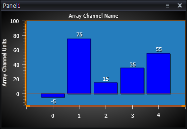 |
| Bar Color | Blue | |
| Bar Value Color | Red | |
| Bar Value Font | Times New Roman, 12pt, style=Bold | |
| Font | Times New Roman, 12pt, style=Bold | 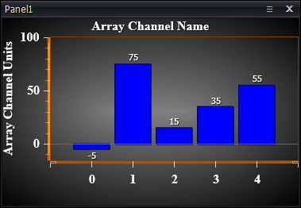 |
| Foreground Color | 37, 125, 189 | |
| Maximum Elements | 3 | 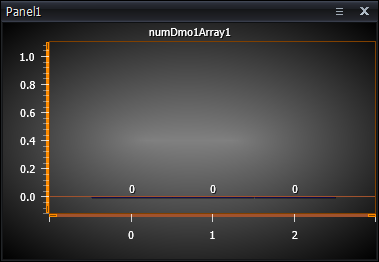 |
| Name | Array Chart | |
| Show Bar Value | True | |
| False | 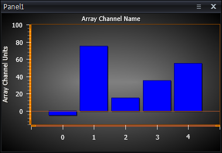 | |
| Show X Axis Grid | True |  |
| False | ||
| Show Y Axis Grid | True | 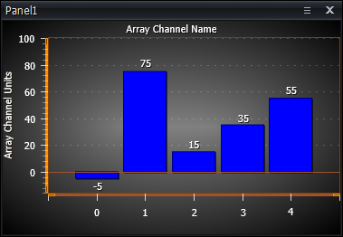 |
| False |
The Bar panel enables you to create analog-style bars that can be used to monitor and control channels in the RDB. The bars primarily rely on reading and writing RDB values. You can add a maximum of ten bars per panel.
To add a new bar, right-click within the panel and select Add Bar.
Adding Multiple Bars to Bar Panel
Bar Actions
| Action | Description |
| Add Bar | Adds a new bar to the Bar panel. |
| Remove Bar | Removes the selected bar from the Bar panel. |
| Move Previous | Moves the selected bar to the previous position it was located. |
| Move Next | Moves the selected bar to the next position. |
| Edit Limits... | Allows you to set limit values for the selected channel, if it has pre-defined limits. This right-click option is only available in AutomationPanel. |
| Cut | Cuts (removes) the selected bar. After a bar has been cut, it can be pasted to a new location. |
| Copy | Copies the selected bar. |
| Paste | Pastes the last copied bar. |
The following properties apply to the entire bar panel.
Bar Panel Properties
| Name | Range of Values | Automatable | Automation Property Name | Description |
| Appearance | ||||
|---|---|---|---|---|
| Level Style | Style 1-26 | - | - | The setting that controls the appearance of the bar's level object. Can be made to look like a thermometer or other objects. Refer to the Bar Panel Themes for examples of each style. |
| Marker Size | 0.0-3.0 | - | - | The scaling factor to change the size of the level indicator. Refer to the Bar Panel Themes for examples of each style. |
| Marker Style | Style type | - | - | The marker shape type (SliderLeft, SliderRight, WedgeLeft, etc.). Refer to the Bar Panel Themes for examples of each style. |
| Name | Title bar name | - | - | The name displayed in the title bar of the panel. Refer to the Bar Panel Themes for examples of each style. |
| Orientation | Vertical/Horizontal | - | - | The orientation of the bars. Stacking is done in the opposite direction. Refer to the Bar Panel Themes for examples of each style. |
| Show Label | True/False | - | - | The setting that controls whether the name of the channel is displayed. Refer to the Bar Panel Themes for examples of each style. |
| Show Value | True/False | - | - | The setting that controls whether the value and units are displayed. Refer to the Bar Panel Themes for examples of each style. |
| Show Watermarks | True/False | - | - | The setting that controls whether the markers for the maximum and minimum observed values are displayed. Refer to the Bar Panel Themes for examples of each style. |
| Stacking | Horizontal/Vertical | - | - | The setting that determines whether bars are displayed next to each other (horizontal) or on top of each other (vertical). Refer to the Bar Panel Themes for examples of each style. |
| Style | Style type | - | - | The setting that controls the overall appearance (theme) of the bar. Refer to the Bar Panel Themes for examples of each style. |
| Visible | True/False |  |
ParentVisible | The setting that controls whether the entire panel is displayed normally (true) or hidden from view (false). |
| Data | ||||
| Precision | Auto/# | |
Precision | The number of decimal points for the display value. Auto means use the RDB Decimal Point field. |
| Units* | SI Metric English Default Auto |
|
Units | The unit system in which to display values (SI, Metric, English, Default, Auto). Default is the system default. Auto is the current system units. |
| Label | ||||
| Label Color | Color value | - | - | The color for the labels (channel, value, and units). |
| Label Field | Channel Name Alias Customer Name Module Name Auto |
- | - | The RDB field to use for the label of the primary channel. This includes Channel Name, Customer Name, Alias, Module Name, and Auto. Setting this value to Auto will cause the label to use the current system setting. |
| Label Font | Font type/font size | - | - | The font type and font size used to display the labels (channel, value, and units). |
| Miscellaneous | ||||
| Automation ID | String/Integer | - | - | The ID used to automate modifications to panel properties at runtime using channels or mailslot messages. Properties that support automation will display the <ID>.<PropertyName> value at the bottom of the Property Manager dialog. |
| Group ID | String/Integer | - | - | Groups panels together such that clicking on the visual representation of the panel in the Layout Editor selects all panels sharing the same Group ID. Clear this setting to remove the panel from the group. |
| Panel Location | Numeric,Numeric | |
PanelLocation | The X,Y coordinates of the upper left-hand corner of the panel. These coordinates are two numeric values separated by a comma (e.g., 0,0). |
| Panel Size | Numeric,Numeric | |
PanelSize | The size of a panel. The size is determined by two numeric values separated by a comma. The first numeric value specifies the width, and the second numeric value specifies the height. |
| Scale | ||||
| Limits Font | Font Type | - | - | The font type used for the limits values. |
| Limits Width | Numerical value | - | - | The width of the limits values located on either side of the bar. |
| Scale Color | Color value | - | - | The color of the scale, ticks, and tick labels. |
| Scale Label Font | Font type | - | - | The font type used for the scale, ticks, and tick labels. |
The following properties apply to individual bars in the bar panel.
Bar Specific Properties
| Name | Range of Values | Automatable | Automation Property Name | Description |
| Behavior | ||||
|---|---|---|---|---|
| Button Width | Integer | - | - | The width of the slider buttons. A number less than 0 autosizes to the text in the button, 0 hides the buttons, and a value greater than 0 is the width of the button in pixels. This setting enables you to modify the size of the buttons for touch-screen devices. |
| Channel | Any channel name | |
CurrentValue | The channel used to get and set when updating and reading from the slider. Once a channel has been selected, the Channel field cannot be blank. If the channel is removed the previous value will be restored. |
| Channel (Enable) | Any channel name | |
ChannelEnable | When the Slider/Buttons/Edit property is set to TRUE, this property will disable (value = 0) or enable (value = 1) all value-editing capabilities for the bar. |
| Slider/Buttons/Edit | True/False | - | - | The setting that determines whether the bar has value-editing capabilities. Value-editing is done via: slider, step buttons, and text edit by double-clicking the value. |
| Step Size (Large) | Scale | |
LargeIncrement | The step size for large steps to the channel's value. |
| Step Size (Small) | Scale | |
SmallIncrement | The step size for small steps to the channel's value. |
| Label | ||||
| Label | Text | |
Label | The text to display instead of the system name. |
| Miscellaneous | ||||
| Automation ID | String/Integer | - | - | The ID used to automate modifications to panel properties at runtime using channels or mailslot messages. Properties that support automation will display the <ID>.<PropertyName> value at the bottom of the Property Manager dialog. |
| Scale | ||||
| Major Tick Count | 0-100 | |
MajorTickCount | The number of major ticks/labels to display. |
| Minor Tick Count | 0-100 | |
MinorTickCount | The number of minor ticks to display. |
| Scale Label Precision | Integer | |
ScalePrecision | The number of decimal points to display in the scale's label. |
| Scale Maximum | Float | |
ScaleMax | The fixed maximum value for the bar scale (ignored if scaling is set to Auto). |
| Scale Minimum | Float | |
ScaleMin | The fixed minimum value for the bar scale (ignored if the scaling is set to Auto). |
| Scaling | Auto | - | - | This setting uses the RDB High/Low Engineering Unit (EU) fields for the maximum/minimum scale values. |
| Fixed | - | - | This setting uses the fixed values in the Scale Minimum/Maximum properties. | |
|
NOTE: | You can drag channels from FlexEdit's Helper Bar and drop channels in this panel. |
The table below demonstrates how various properties can change the appearance of the Bar panel:
Bar Panel Themes
| Property | Value | Appearance Example |
| Level Style | Default | 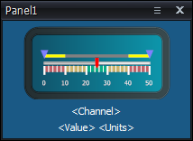 |
| 1 | ||
| 2 | ||
| 3 | 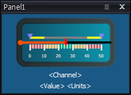 | |
| 4 | 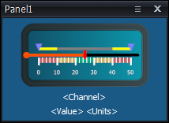 | |
| 5 | 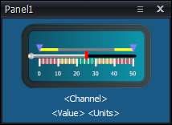 | |
| 6 | ||
| 7 | 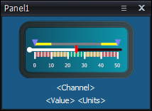 | |
| 8 | 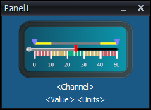 | |
| 9 | 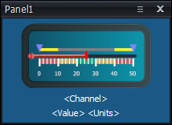 | |
| 10 | 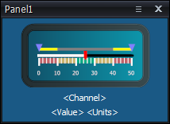 | |
| 11 | 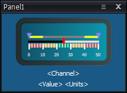 | |
| 12 | ||
| 13 | ||
| 14 | 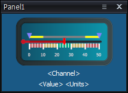 | |
| 15 | 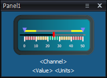 | |
| 16 | 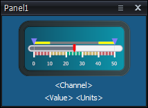 | |
| 17 | 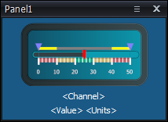 | |
| 18 | 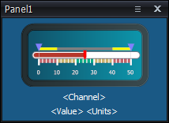 | |
| 19 | 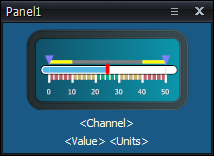 | |
| 20 | ||
| 21 | 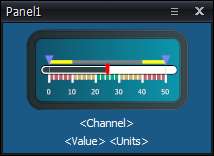 | |
| 22 | 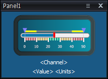 | |
| 23 | 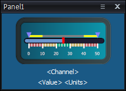 | |
| 24 | ||
| 25 | 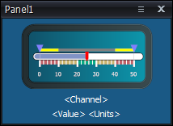 | |
| 26 | 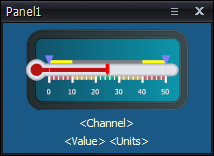 | |
| Marker Size | 3 | 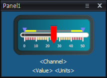 |
| Marker Style | Default | |
| TriangleLeft | ||
| SliderLeft | ||
| Circle | ||
| WedgeLeft | ||
| Diamond | ||
| ArrowLeft | ||
| Box |  |
|
| Star | ||
| Button | ||
| SnowFlake | ||
| TriangleRight | ||
| SliderRight | ||
| WedgeRight | ||
| ArrowRight | ||
| Name | Bar Panel | |
| Orientation | Vertical | |
| Horizontal | ||
| Show Label | True | |
| False | ||
| Show Value | True | |
| False | ||
| Show Watermarks | True | |
| False | ||
| Stacking | Horizontal | |
| Vertical | ||
| Style | White | |
| Black |  |
|
| Brown | ||
| Gray | ||
| Teal | ||
| Dark Blue | ||
| Orange | ||
| Midnight Blue | ||
| Red |
The Channel List panel enables you to display channel values and attributes in lists. You can include multiple lists in each panel, and each list is displayed in its own tab. Tabs can be reordered by clicking and dragging the selected tab. In addition, each tab can be renamed by right-clicking the tab and selecting Rename List.
Rename Channel List
The actions and properties for this panel are described in the tables below.
To perform actions within the Channel List panel, right-click within the panel. The following menu options appear:
Channel List Actions
In addition to the actions common to all panels, such as Duplicate, Move, etc., this panel supports the following actions:
Channel List Panel Actions
| Action | Description |
| Select Fields | Select the columns to display from the RDB for the current tab only. |
| Add Group | Adds a new tab with the specified group of channels. |
| Add Empty List | Adds a new tab with no channels on it. You would add channels using the Add Channels action. |
| Add Active PIDs List | Adds the current list of Active PIDs to a new tab in the panel. |
| Add Channels | Adds specific channels to any list that is not a group list. |
| Remove Channels | Removes selected channels or separators from a non-group list. |
| Cut Channels | Removes selected channels from a non-group list and copies their names to the clipboard. |
| Copy Channels | Copies the names of the channels to the clipboard. |
| Paste Channels | Inserts the channels cut or copied into the clipboard. |
| Edit | Displays the Channel Selection dialog to define a new channel for the selected row. |
| Set Value... | Displays a diagnostic window to set the value of an output type channel. This option is only active if the panel's Editor Type property is set to "Popup". |
| Move Up or Down | Reorders the selected row(s) in a non-group list. Ctrl + Up and Down keyboard shortcuts are also supported. These actions are disabled if any column is sorted. |
| Separator | Insert: Adds a new separator row to the list. Rename: Changes the name of the selected separator. |
Channel List Properties
| Name | Range of Values | Automatable | Automation Property Name | Description |
| Appearance | ||||
|---|---|---|---|---|
| Even Row Color | Color value | - | - | The background color of the even rows. Refer to the Channel List Panel Themes section below for examples of each style. |
| Font | Font type/font size | - | - | The font type and font size used to display the labels and values in the list. Refer to the Channel List Panel Themes section below for examples of each style. |
| Hex Format | True/False | - | - | The setting that determines whether to display numeric values in hexadecimal format. Overridden By: Numeric Value Display Format Overrides: Precision Refer to the Channel List Panel Themes section below for examples of each style. |
| Highlight Row Color | Color value | - | - | The background color of the highlighted row. Refer to the Channel List Panel Themes section below for examples of each style. |
| Name | Title bar name | - | - | The name displayed in the title bar of the panel. Refer to the Channel List Panel Themes section below for examples of each style. |
| Numeric Value Display Format | *Any supported .Net numeric format string (e.g., F2 or G4 or E3) | - | - | This setting will cause the numeric values to be displayed using the defined .Net format string. Overrides: Hex Format Precision |
| Odd Row Color | Color value | - | - | The background color of the odd rows. Refer to the Channel List Panel Themes section below for examples of each style. |
| Separator Background Color | Color value | - | - | The background color of the separator rows. Refer to the Channel List Panel Themes section below for examples of each style. |
| Separator Text Color | Color value | - | - | The color of text displayed in the separator rows. Refer to the Channel List Panel Themes section below for examples of each style. |
| Show Order Column | True/False | - | - | Setting to TRUE displays the order column with channel indices, where setting to FALSE hides the order column. Refer to the Channel List Panel Themes section below for examples of each style. |
| Text Color | Color value | - | - | The color value of the text in each channel list in the panel. Refer to the Channel List Panel Themes section below for examples of each style. |
| Value Alignment | Left/Center/Right | - | - | The alignment of data in the Value column. Columns of numeric data also adhere to this setting, but string-type fields remain left-justified. Refer to the Channel List Panel Themes section below for examples of each style. |
| Visible | True/False |  |
ParentVisible | The setting that controls whether the entire panel is displayed normally (true) or hidden from view (false). |
| Behavior | ||||
| Editor Type | None/Popup/In-Place | - | - | The editor type used to modify the channel value. |
| Show Tabs | True/False | - | - | The setting that determines whether the tabs for multiple channel lists are displayed. |
| Data | ||||
| Precision | Auto/# | |
Precision | The number of decimal points for the primary value. Auto means use the RDB Decimal Point field. Overridden By: Hex Format Numeric Value Display Format |
| Units | SI Metric English Default Auto |
|
UnitSystem | The unit system in which to display values (SI, Metric, English, Default, Auto). Default is the channel's base unit system. Auto is the current system-wide unit system. |
| Miscellaneous | ||||
| Automation ID | String/Integer | - | - | The ID used to automate modifications to panel properties at runtime using channels or mailslot messages. Properties that support automation will display the <ID>.<PropertyName> value at the bottom of the Property Manager dialog. |
| Group ID | String/Integer | - | - | Groups panels together such that clicking on the visual representation of the panel in the Layout Editor selects all panels sharing the same Group ID. Clear this setting to remove the panel from the group. |
| Panel Location | Numeric,Numeric | |
PanelLocation | The X,Y coordinates of the upper left-hand corner of the panel. These coordinates are two numeric values separated by a comma (e.g., 0,0). |
| Panel Size | Numeric,Numeric | |
PanelSize | The size of a panel. The size is determined by two numeric values separated by a comma. The first numeric value specifies the width, and the second numeric value specifies the height. |
Runtime Properties
| Name | Range of Values | Automatable | Automation Property Name | Description |
| CurrentList | Any valid tab name | |
CurrentList | Switches the channel list to the tab with the specified name. |
|
NOTE: | You can drag channels from FlexEdit's Helper Bar and drop channels in this panel. |
Separators are a feature of the Channel List panel that enable you to create different channel categories and separate them within the panel. This feature improves visibility of the various channel types contained within a single panel. Separators are added by right-clicking within a Channel List panel and selecting the Separator option. Please note, the first time you add a separator, the separator positions itself at the top of the panel. After the first separator, the new separator will be inserted above the currently highlighted channel. Separator groupings expand or collapse, as necessary. Empty text and duplicated text is allowed for multiple separators.
The separator feature has the following limitations:
Channel List Separators
The Channel List panel has a number of security permissions that are used to restrict what can be modified in the panel in AutomationPanel. These permissions activate right-click context menu options and are as follows:
The table below demonstrates how various properties can change the appearance of the Channel List panel:
Channel List Panel Themes
| Property | Value | Appearance Example |
| Even Row Color | 37, 125, 189 | |
| Font | Times New Roman, 12pt, style=Bold | |
| Hex Format | True | |
| False |  |
|
| Highlight Row Color | 37, 125, 189 | |
| Name | Channel List Panel | |
| Odd Row Color | 37, 125, 189 | |
| Separator Background Color | 37, 125, 189 | |
| Separator Text Color | White | |
| Show Order Column | True | |
| False | ||
| Text Color | Red | |
| Value Alignment | Left | |
| Center | ||
| Right |
The Chart panel supports live data plotting at a rate of up to 100 Hz resolution. These panels support time series and XY plots and are comprised of a single x-axis and multiple y-axes on which multiple series (traces) may be defined. The data source for XY series may be live channel data or statistic reference data, read from a data file using the .dat file extension.
Chart Panel
Chart panel supports the following actions:
Chart Panel Actions
| Action | Description |
| Pause | Pauses display updates. This is necessary to show cursors or export data. |
| Resume | Resumes updating the display. |
| Clear | Clears the data currently displayed in the chart. |
| Restore | Restores the display to its default view. |
| Prints a copy of the plot. The Print dialog is displayed to allow the user to choose printer, pages, etc. | |
| Quick Print | Prints a copy of the plot. No Print dialog is displayed. If using Windows 10 to manage the default printer, the Quick Print feature will print a copy to the most recently used printer at the user's current location. If Windows 10 is not managing the default printer, the Quick Print feature will print a copy to the user's selected default printer. |
| Show X Cursor | Shows a vertical line and digital readout of the value of each series crossing that value. This line can be moved around the chart to inspect the data at any chart position. Does not apply to XY charts (x-axis is a channel), and the chart must be paused to use this cursor. |
| Show X Reference Cursor | Shows another X cursor line to use as a reference for calculating the difference with the X Cursor. Does not apply to XY charts (x-axis is a channel) and the chart must be paused to use this cursor. |
| Export Data | Saves data in either .dat or .csv format. The chart must be paused to export data. The module name, customer name, date, time, parameters, units, and channels will be included in the exported data. An elapsed time column will appear in the exported data if the StopWatchChannel is populated. This column includes the amount of time passed since the Stopwatch channel transitioned from a higher value to a lower value. |
| Add Series | Shows flyout menu of existing axes. After selecting an axis, a prompt appears to select a channel which is then added to the selected axis as one of its series. |
| Remove Series | Shows flyout menu of existing axes. After selecting an axis, a flyout menu of existing series is shown. Selecting a channel from the flyout menu will remove that series (i.e., channel) from the axis. |
You can use keyboard and mouse combinations to perform a variety of actions in the chart. The following tables describe the different functionality possible:
Mouse Controls
| Action | Button | Result |
| Double-click | Left | Displays menu options for restoring, printing, and displaying X Cursors, etc. |
| Hold-Drag | Left | Zooms in on a specific area. |
| Scroll Up/Down | Mouse Wheel | Scroll up zooms vertical and horizontal axes in. Scroll down zooms vertical and horizontal axes out. When the Wheel Zoom Needs ALT Chart panel property is set to TRUE, you must also simultaneously press the ALT key when using the mouse wheel to zoom the axes. |
| Hold-Drag-Release | Right-click to hold Left-click to release |
Pans chart. |
Vertical Axis Controls
| Action | Button |
| CTRL + Scroll | Controls the vertical axes. Scroll up zooms vertical axes in and scroll down zooms vertical axes out. |
| CTRL + Left-click | Zooms the vertical axis (axes) in incrementally. |
| CTRL + Right-click | Zooms the vertical axis (axes) out incrementally. |
Horizontal Axis Controls
| Key Combination | Button |
| SHIFT + Scroll | Controls the horizontal axis. Scroll up zooms horizontal axis in and scroll down zooms horizontal axis out. |
| SHIFT + Left-click | Zooms the horizontal axis in incrementally. |
| SHIFT + Right-click | Zooms the horizontal axis out incrementally. |
Horizontal and Vertical Axes Controls
| Key Combination | Description |
| CTRL + SHIFT + Scroll | Controls both horizontal and vertical axes simultaneously. Scroll up zooms axes in and scroll down zooms axes out. |
| CTRL + SHIFT + Left-click | Zooms both axes in incrementally. |
| CTRL + SHIFT + Right-click | Zooms both axes out incrementally. |
In addition to the keyboard/mouse combinations above, you can scale the axes by using the resize markers at the beginning or top of each axis. By selecting the marker, you can then drag your mouse up or down to modify the scaling of the individual axis.
Resize Markers
Chart Panel Properties Right-Click Actions
| Action | Description |
| Expand All | Expands all nodes in the tree. |
| Collapse All | Collapses all nodes in the tree. |
| Add Y-Axis | Adds a Y-Axis to the chart. |
| Duplicate | Duplicates the selected series. This action is only available when right-clicking a series. |
Chart Panel Properties
| Name | Range of Values | Automatable | Automation Property Name | Description |
| Appearance | ||||
|---|---|---|---|---|
| Axis Label Font | Font type/font size | - | - | The font type and font size used for the major tick labels. Refer to the Chart Panel Themes section below for examples of each style. |
| Axis Title Font | Font type/font size | - | - | The font type and font size for the title of each axis. Refer to the Chart Panel Themes section below for examples of each style. |
| Inner Color | Color value | - | - | The background color inside the chart. Refer to the Chart Panel Themes section below for examples of each style. |
| Inner Color Gradient | Color value | - | - | The color used to create gradient shading inside the chart. Refer to the Chart Panel Themes section below for examples of each style. |
| Label Field | Channel Name Alias Customer Name Module Name Auto |
- | - | The RDB field to use for the label of the primary channel. This includes Channel Name, Customer Name, Alias, Module Name, and Auto. Setting this value to Auto will cause the label to use the current system setting. Refer to the Chart Panel Themes section below for examples of each style. |
| Legend Categorization | True/False |  |
LegendCategorization | The setting that determines whether the y-axis label displays in the legend. When set to true, the y-axis label is displayed. Refer to the Chart Panel Themes section below for examples of each style. |
| Legend Category Color | Color value | - | - | The color of the y-axis label displayed in the legend. Refer to the Chart Panel Themes section below for examples of each style. |
| Legend Category Font | Font type/font size | - | - | The font type and font size used for y-axis label displayed in the legend. Refer to the Chart Panel Themes section below for examples of each style. |
| Legend Float | True/False | |
LegendFloat | The setting that determines whether the chart legend is locked in a specific position (false) or whether it can be repositioned on the chart (true). When this setting is false, the chart will be resized so that legend doesn't overlap it. Refer to the Chart Panel Themes section below for examples of each style. |
| Legend Font Size | 1-100 | - | - | The size of font in the chart legend. Refer to the Chart Panel Themes section below for examples of each style. |
| Legend Position | Position location | - | - | The initial position of the chart legend. Refer to the Chart Panel Themes section below for examples of each style. |
| Legend Show Checkboxes | True/False | - | - | The setting that determines whether to show or hide checkboxes in the chart legend. When set to true, the checkboxes display in the legend. When a checkbox is enabled in the legend, then the chart trace is visible for that channel. By default, this setting is set to true. Refer to the Chart Panel Themes section below for examples of each style. |
| Legend Visible | True/False | |
LegendVisible | The setting that determines whether to show or hide the legend box that displays the list of series in the chart. Refer to the Chart Panel Themes section below for examples of each style. |
| Limit Lines Visible | True/False | |
LimitLinesVisible | The setting that determines whether the limit lines are displayed. For lines to appear for a series, the series must have a line style for limits/warnings other than 'None', and its channel must have limits active. |
| Name | Title bar name | - | - | The name displayed in the title bar of the panel. Refer to the Chart Panel Themes section below for examples of each style. |
| Outer Color | Color value | - | - | The background color of the area outside the main chart. Refer to the Chart Panel Themes section below for examples of each style. |
| Outer Color Gradient | Color value | - | - | The color used to create gradient shading outside the main chart. Refer to the Chart Panel Themes section below for examples of each style. |
| Title Color | Color value | - | - | The color of the title text that displays across the top of the chart. Refer to the Chart Panel Themes section below for examples of each style. |
| Title Font | Font type/font size | - | - | The font type and font size used to display the chart title. Refer to the Chart Panel Themes section below for examples of each style. |
| Title Text | Text | |
TitleText | The title of the chart that is displayed across the top of the chart. Refer to the Chart Panel Themes section below for examples of each style. |
| Visible | True/False | |
ParentVisible | The setting that controls whether the entire panel is displayed normally (true) or hidden from view (false). |
| Y-Axes Layout | Layered/Stacked | - | - | The y-axis arrangement mode when there are several Y axes defined. Axes can be displayed layered (horizontally) or stacked (vertically). Refer to the Chart Panel Themes section below for examples of each style. |
| Y-Axes Placement | All Left/Left Then Right | - | - | Determines the placement of Y axes. All Left: all Y axes will appear on the left side of the chart. Left Then Right: Y axes are alternately distributed to both sides of the chart, starting on the left. Refer to the Chart Panel Themes section below for examples of each style. |
| Behavior | ||||
| Frequency | Select | - | - | The update rate of the chart (per min or Hz). |
| Global Buffer | Global Buffer Name | - | - | The name of the global buffer from which data is obtained for the chart. This setting is only applicable if the chart is using the 10 Hz (buffered) frequency setting. Only buffers already created appear in the selection list. |
| Mailslot Name | Mailslot Name | - | - | The mailslot used to send chart control commands at runtime. |
| Wheel Zoom Needs ALT | True/False | - | - | When set to TRUE, the user must press the ALT key, while only using the mouse wheel to scroll, to zoom both the X and Y axes simultaneously. |
| Data | ||||
| Maximum Points | 1-100,000 | - | - | The maximum number of points in a series (trace). |
| Units | SI Metric English Default Auto |
|
UnitSystem | The unit system in which to display values (SI, Metric, English, Default, Auto). Default is the system default. Auto is the current system units. |
| X Axis | - | - | - | The x-axis settings. This is an expandable section that contains property settings specific to the x-axis (i.e., not the collection). The following settings in this section are automatable: Channel Major Tick Spacing Marker Size Maximum Minimum Minor Tick Count Precision Title |
| Miscellaneous | ||||
| Automation ID | String/Integer | - | - | The ID used to automate modifications to panel properties at runtime using channels or mailslot messages. Properties that support automation will display the <ID>.<PropertyName> value at the bottom of the Property Manager dialog. |
| Group ID | String/Integer | - | - | Groups panels together such that clicking on the visual representation of the panel in the Layout Editor selects all panels sharing the same Group ID. Clear this setting to remove the panel from the group. |
| Panel Location | Numeric,Numeric | |
PanelLocation | The X,Y coordinates of the upper left-hand corner of the panel. These coordinates are two numeric values separated by a comma (e.g., 0,0). |
| Panel Size | Numeric,Numeric | |
PanelSize | The size of a panel. The size is determined by two numeric values separated by a comma. The first numeric value specifies the width, and the second numeric value specifies the height. |
Chart Axes Properties
| Name | Range of Values | Automatable | Automation Property Name | Description |
| x-axis | ||||
|---|---|---|---|---|
| Channel | Channel name | |
AxisX.Channel | The channel that is plotted along the horizontal axis. To set up XY plotting, set the channel property. To set up time series plotting, leave this field empty. |
| Color | Color value | |
AxisX.Color | The color of the x-axis line and grid line. |
| Data Interval | Numeric value | - | - | The setting that specifies the amount of time in seconds between successive data points. The chart uses this assumed spacing of data whenever the value of Data Interval is greater than 0 and the x-axis channel is unspecified. |
| Grid Visible | True/False | |
AxisX.GridVisible | The setting that determines whether to display vertical grid lines at each major tick. |
| Major Tick | Numeric value | |
AxisX.MajorTickSpacing | The distance between (or count of) major ticks and grid lines depending on the Major Tick Type setting. The chart may increase this spacing or decrease the number of ticks to avoid overlapping the axis labels. |
| Major Tick Type | Spacing/Count | - | - | The distance between ticks (Spacing) or the number of ticks (Count). By default, this setting is set to Spacing. |
| Marker Color | Color value | - | - | The central color of the marker. |
| Marker Size | Numeric value | |
AxisX.MarkerSize | The diameter of the marker. |
| Marker Visible | True/False | - | - | The setting that determines whether to show a circular highlight around a point in the series. For series sourced from a file, the point closest to the Marker Position is highlighted. For real-time series, the last point is highlighted. |
| Maximum | -10^20^, 10^20 | |
AxisX.MaximumValue | The maximum value for the axis. This is for fixed range only. |
| Minimum | -10^20^, 10^20 | |
AxisX.MinimumValue | The minimum value for the axis. This is for fixed range only. |
| Minor Tick Count | 0-100 | |
AxisX.MinorTickCount | The number of ticks between major ticks. |
| Precision | Auto/# | |
AxisX.Precision | The number of decimal points for the display value. Auto means use the RDB Decimal Point field. |
| Range Options | Fixed/Channel/Fit | |
AxisX.RangeOptions | Method for determining the scale range for the axis. Options include: - Fixed: Uses Maximum and Minimum properties. - Channel: Uses Low EU/High EU for the channel. - Fit: Uses the maximum and minimum of the plotted data to determine the range. This is the default setting. |
| Stationary | True/False | - | - | Suppress the x-axis from scrolling as the data plot progresses. NOTE: Only applicable if using a 'Fixed' range option and Channel is not specified. |
| Stopwatch Channel | Channel name | - | - | The channel configured to count up in seconds that serves as the source for x-axis tick labels. |
| Stopwatch Clear | True/False | - | - | The setting that determines whether the chart is cleared when the Stopwatch Channel is reset. |
| Time Type | Absolute/Elapsed | - | - | The setting that determines how time is shown on the x-axis. Absolute reports time as wall time. Elapsed reports time in seconds since the chart was last cleared. This setting is ignored when the Stopwatch Channel property is set to a valid channel name. When a channel property is not set, then the chart is time-based, and this setting is applied. Otherwise, the x-axis will not be time-based, and this setting will be ignored. |
| Time Format | mm:ss/HH:mm:ss | - | - | The setting that determines whether time is reported in mm:ss or HH:mm:ss. The Precision setting can be used to report seconds up to 7 decimal places (100 ns). |
| Title | Text | |
AxisX.TitleText | The name for the axis. This field supports string table substitution. |
| y-axis | ||||
| Automation ID | String/Integer | - | - | The ID used to automate modifications to panel properties at runtime using channels or mailslot messages. Properties that support automation will display the <ID>.<PropertyName> value at the bottom of the Property Manager dialog. |
| Color | Color value | |
Color | The color of the y-axis line and grid line. |
| Fit Increment | Numeric value | - | - | The amount of extra padding surrounding any scale range changes in order to reduce fluctuations in the axis scaling. This property is only used if the Range Option is set to Fit. |
| Fit Padding (%) | Numeric value | - | - | The amount of extra space (in % of the full scale range) to leave above the maximum and below the minimum y-values when using the Fit option for the range. |
| Grid Visible | True/False | |
GridVisible | The setting that determines whether to display horizontal grid lines at each major tick. |
| Major Tick | Numeric value | |
MajorTickSpacing | The distance between (or count of) major ticks and grid lines depending on the Major Tick Type setting. The chart may increase this spacing or decrease the number of ticks to avoid overlapping the axis labels. |
| Major Tick Type | Spacing/Count | - | - | The distance between ticks (Spacing) or the number of ticks (Count). By default, this setting is set to Spacing. |
| Maximum | -10^20^, 10^20 | |
MaximumValue | The maximum value for the axis. This is for fixed range only. |
| Minimum | -10^20^, 10^20 | |
MinimumValue | The minimum value for the axis. This is for fixed range only. |
| Minor Tick Count | 0-100 | |
MinorTickCount | The number of ticks between major ticks. |
| Precision | Auto/# | |
Precision | The number of decimal points for the display value. Auto means use the RDB Decimal Point field. |
| Range Options | Fixed/Channel/Fit | |
RangeOptions | Method for determining the scale range for the axis. Options include: - Fixed: Uses Maximum and Minimum properties. - Channel: Uses Low EU/High EU for the channel. - Fit: Uses the maximum and minimum of the plotted data to determine the range. This is the default setting. |
| Title | Text | |
TitleText | The name for the axis. This field supports string table substitution. |
| User Units | SI Metric English Default Auto |
|
UserUnits | Units to use. This overrides the Units property. Note that units that are incompatible with the selected channel's units are ignored. |
Chart Series Properties
| Name | Range of Values | Automatable | Automation Property Name | Description |
| Miscellaneous | ||||
|---|---|---|---|---|
| Automation ID | String/Integer | - | - | The ID used to automate modifications to panel properties at runtime using channels or mailslot messages. Properties that support automation will display the <ID>.<PropertyName> value at the bottom of the Property Manager dialog. |
| Channel | Empty or Channel name | |
Channel | The channel for plotting time-series data. Once a channel has been selected, the Channel field cannot be blank. If the channel is removed the previous value will be restored. |
| Data File | File Path | |
FileConfig | The name of a .DAT file to load channel values from. For X-Y plot only. May contain INI macros. |
| Data Source | Live Data/Data File | |
DataSource | The location for obtaining data. Live data is retrieved from the RDB. |
| Label | Text | |
TitleText | The name for the series. If this field is left blank, the name of the channel set in the Channel property is used, as dictated by the panel's Label Field property. Supports string table substitution. |
| Line Color | Color value | |
LineColor | The color of the line. |
| Line Style | Select | - | - | The line pattern (solid, dash, dot, etc.) |
| Line Style (Limit) | Select | |
LimitLinesPattern | The style of the limit lines. To display limit lines, the panel must have the Limit Lines Visible setting set to true, and limits must be active for the channel. |
| Line Style (Warning) | Select | |
WarningLinesPattern | The style of the warning lines. To display warning lines, the panel must have the Limit Lines Visible setting set to true, and limits must be active for the channel. |
| Line Thickness | 0-24 | - | - | The thickness of the lines drawn on the chart. |
| Line Visible | True/False | |
LineVisible | The setting that turns the visibility of the line on/off. |
| Point Color (inner) | Color value | - | - | The innermost color of the data points. |
| Point Color (outer) | Color value | - | - | The outermost color of the data points. |
| Point Size | 1-32 | - | - | The size in pixels of the data point markers. |
| Points Visible | True/False | |
PointsVisible | The setting that turns the visibility of the data points on/off. |
Runtime Properties*
| Name | Range of Values | Automatable | Automation Property Name | Description |
| ClockTimeOrigin | Numeric value | |
ClockTimeOrigin | (x-axis only) Value of the CLOCK_TIME channel for the leftmost side of the chart. Only applied if the using the 'Fixed' range option on time-based data |
| MarkerPosition | Numeric value | |
MarkerPosition | (x-axis only) Position along the horizontal axis for the Marker. Only applied to data sourced from a file, not from RDB. |
* There is an additional runtime property that is used to control the x-axis location of the Marker. You can set/get this property by using $SetItemProperty and $GetItemProperty, or by using a channel named 'MyChart.AxisX.MarkerPosition', where 'MyChart' is the Chart panel's Automation ID.
Some of the actions have equivalent mailslot message commands. For more information, see the Chart Panel Mailslot Examples section below.
Chart Panel Mailslot Messages
| Command | Description |
| Add Series | Adds an additional series to the chart using the specified channel name and automation ID. Full message of the form: AddSeries;channel=<name>;apid=<id>. |
| Clear | Clears the data currently displayed in the chart. |
| ClearSeries | Removes all series for the first Y-axis. |
| Loadfile | Triggers reading a data (.dat) file. Full message is of the form: loadfile;file=<file path>;series=<series label>. If a file is not specified, then the Chart Panel reloads the file path already configured for the named series. |
| GetCurrentXMax | Gets current value of maximum value of x-axis. Full message is of the form: GetCurrentXMax;<ChannelName>. The specified channel is set to the current maximum X value. |
| Pause | Pauses display updates. This is necessary to show cursors or export data. |
| Prints a copy of the plot. The Print dialog is displayed to allow the user to choose printer, pages, etc. | |
| QuickPrint | Prints a copy of the plot. No Print dialog is displayed. If using Windows 10 to manage the default printer, the Quick Print feature will print a copy to the most recently used printer at the user's current location. If Windows 10 is not managing the default printer, the Quick Print feature will print a copy to the user's selected default printer. |
| Resume | Resumes updating the display. |
| Restore | Restores the display to its default view. |
The Chart panel supports the use of mailslot messages. In the panel's property manager, you can define a mailslot name for the panel. This enables you to reference the panel specifically as your destination mailslot. The examples below represent the use of the Print and Quick Print mailslot messages. These messages enable you to print a paper copy of the chart plot. Print displays the Print dialog used to select a printer, define the pages to print, etc. Quick Print uses your printer's default settings and immediately prints the data.
Examples of the mailer tool and these mailslot messages are outlined below.
Syntax:
\\.\\mailslot\ChartMailslotName>>Message
Where: ChartMailSlotName is the mailslot name defined in the chart's property manager settings.
Examples:
\\.\\mailslot\StripChart>>Print \\.\\mailslot\StripChart>>Quick Print
Mailslot Name
Print Message Example using Mailer
The format of the Chart panel messages is simply the text of the command you want to invoke. For example, to print, you just send the word "Print." The commands are case insensitive.
Print Dialog
The table below demonstrates how various properties can change the appearance of the Chart panel:
Chart Panel Themes
| Property | Value | Appearance Example |
| Axis Label Font | Segoe UI, 12 pt, style=Italic | |
| Axis Title Font | Times New Roman, 12 pt, style=Bold | |
| Inner Color | 37, 125, 189 | |
| Inner Color Gradient | 37, 125, 189 | |
| Label Field | Channel Name | |
| Alias | ||
| Customer Name | ||
| Module Name | ||
| Auto | ||
| Legend Categorization | True | |
| False | ||
| Legend Category Color | Red | |
| Legend Category Font | Times New Roman, 12 pt, style=Bold | |
| Legend Float | True | |
| False | ||
| Legend Font Size | 12 | |
| Legend Position | Top-left. | |
| Top center. | ||
| Top-right. | ||
| Left center. | ||
| Right center. | ||
| Bottom-left. | ||
| Bottom center. | ||
| Bottom-right. | ||
| Manual | ||
| Related segment top left. | ||
| Related segment top center. | ||
| Related segment top right. | ||
| Related segment bottom left. |  |
|
| Related segment bottom center. | ||
| Related segment bottom right. | ||
| Related segment left margin center. | ||
| Related segment right margin center. | ||
| Legend Show Checkboxes | True | |
| False | ||
| Legend Visible | True | |
| False | ||
| Name | Chart Panel | |
| Outer Color | 37, 125, 189 | |
| Outer Color Gradient | 37, 125, 189 | |
| Title Color | 37, 125, 189 | |
| Title Font | Times New Roman, 12 pt, style=Bold | |
| Title Text | Chart Panel | |
| Y-Axes Layout | Stacked | |
| Layered | ||
| Y-Axes Placement | All Left | |
| Left Then Right |
The Data Log Viewer panel is used to view the contents of .dat files located in the Data folder; it displays the last 1000 rows of data from the last dataset in the file. When you run tests in AutomationPanel, the test data is saved as a .dat file. You can quickly display the results of a test using the Data Log Viewer panel by selecting a file using the Select File... button or by modifying the file name programmatically. The top-located checkbox is used to automatically scroll to the last row of displayed data. The Refresh button will force a file update; this is useful when running a long transient log when the file is normally only updated at the end of the log.
Data Log Viewer Panel
Data Log Viewer Panel Properties
| Name | Range of Values | Automatable | Automation Property Name | Description |
| Appearance | ||||
| Column Header Fields | Field Names | - | - | A comma separated list of the header fields from the data file to show in the column headers. This list can contain PARAMS, Units, and fields specified in the RDBHeaderAdditions powertek.ini setting. If left empty, then all headers will be shown. Refer to the Data Log Viewer Panel Themes section below for examples of each style. |
| Controls Font | Font type/font size | - | - | The font used for the button and filename controls at the top of the panel. Refer to the Data Log Viewer Panel Themes section below for examples of each style. |
| Even Row Color | Color value | - | - | The background color of the even row. Refer to the Data Log Viewer Panel Themes section below for examples of each style. |
| Font | Font type/font size | - | - | The font type and font size used to display the text in the grid. Note that this setting does not affect the font appearance in column headers. Refer to the Data Log Viewer Panel Themes section below for examples of each style. |
| Hidden Columns | 0-5 | - | - | The number of columns hidden from view in the grid. This number must be between 0 and 5. Refer to the Data Log Viewer Panel Themes section below for examples of each style. |
| Highlight Row Color | Color value | - | - | The color of the highlighted row. Refer to the Data Log Viewer Panel Themes section below for examples of each style. |
| Invalid Color | Color value |  |
InvalidColor | The background color of any grid rows that are considered invalid based on the stored value in the Invalid Column column. Refer to the Data Log Viewer Panel Themes section below for examples of each style. |
| Name | Title bar name | - | - | The name displayed in the title bar of the panel. Refer to the Data Log Viewer Panel Themes section below for examples of each style. |
| Odd Row Color | Color value | - | - | The background color of the odd row. Refer to the Data Log Viewer Panel Themes section below for examples of each style. |
| Text Color | Color value | - | - | The color of the text in the grid. Refer to the Data Log Viewer Panel Themes section below for examples of each style. |
| Visible | True/False | |
ParentVisible | The setting that controls whether the entire panel is displayed normally (true) or hidden from view (false). |
| Behavior | ||||
| Checkboxes | True/False | |
Checkboxes | When set to TRUE, a checkbox column will display in the panel's grid. These cells can be checked, and the user can set or get the checked rows by using the CheckedRows property. |
| Filter | File path/List | |
Filter | Indicates which channels from the data log will be displayed. Can be a comma-delimited list of column headers or an LOL filename, e.g., MAIN.LOL. |
| Header Field | <Empty> Alias Description Customer Name Module Name |
- | - | The name of the RDB field to display in the Name column of the log header grid. If this field is empty, then the header name from the file will be used. |
| Header Filter | Header Values | - | - | A comma-delimited list of the names of the log header values to display in the Header grid. If this field is blank, then all log header values will display. |
| Invalid Column | Channel name | |
InvalidColumn | The column (i.e., logged channel) in the data log used to determine row validity. If a column value is a non-zero number, that row's background color will be set per the Invalid Color property. |
| Show Circuit File | True/False | - | - | The setting that determines whether the Data Log Viewer panel automatically shows the data file for the currently selected circuit (in the Select Circuit panel). This is only for iTest.BTS. |
| Show Headers | True/False | - | - | When set to TRUE, the log header values from the selected data file will display in a grid above the data grid. Note that if this setting is set to TRUE at start-up, then some properties (e.g., Header Filter and Automation ID) may display empty values in the Property Manager and will not function properly. If this is the case, then these properties must be repopulated or a manual change must be made and saved to the layout containing the Data Log Viewer panel. |
| Show Last Row Default | True/False | - | - | If set to TRUE, the Always show last row checkbox at the top of the panel will be checked when the panel is first loaded. |
| Show Select File | True/False | - | - | This setting determines if the Select File button at the top of the panel is visible or hidden. |
| Miscellaneous | ||||
| Automation ID | String/Integer | - | - | The ID used to automate modifications to panel properties at runtime using channels or mailslot messages. Properties that support automation will display the <ID>.<PropertyName> value at the bottom of the Property Manager dialog. |
| Group ID | String/Integer | - | - | Groups panels together such that clicking on the visual representation of the panel in the Layout Editor selects all panels sharing the same Group ID. Clear this setting to remove the panel from the group. |
| FilePath | File path | |
FilePath | This is a hidden property that enables you to control the file displayed in the Data Log Viewer panel. It's automatable, and it can be set using the $SETITEMPROPERTY mailslot message. |
| CheckedRows | String/Integer | |
CheckedRows | This is a hidden property that can be used to get or set the state of checkboxes for specified rows in the panel by using the $GETITEMPROPERTY/$SETITEMPROPERTY mailslot messages. This property supports a comma-delimited list of 1 based row numbers; an empty value indicates no rows are checked. |
| Panel Location | Numeric,Numeric | |
PanelLocation | The X,Y coordinates of the upper left-hand corner of the panel. These coordinates are two numeric values separated by a comma (e.g., 0,0). |
| Panel Size | Numeric,Numeric | |
PanelSize | The size of a panel. The size is determined by two numeric values separated by a comma. The first numeric value specifies the width, and the second numeric value specifies the height. |
The table below demonstrates how various properties can change the appearance of the Data Log Viewer panel:
Data Log Viewer Panel Themes
| Property | Value | Appearance Example |
| Column Header Fields | Customer Name | |
| Controls Font | Times New Roman, 12pt, style=Bold, Italic | |
| Even Row Color | 37, 125, 189 | |
| Font | Times New Roman, 12 pt, style=Bold | |
| Hidden Columns | 3 | |
| Highlight Row Color | 37, 125, 189 | |
| Invalid Color | Red | |
| Name | Data Log Viewer Panel | |
| Odd Row Color | 37, 125, 189 | |
| Text Color | Red |
The Data Quality panel provides visibility for channel quality violation for both live data and data from data files. The quality limits for selected channels are continuously monitored by your system to provide visibility for channel values that exceed the set limit range. If the minimum and maximum values are exceeded, the DQ Status on the Data Quality panel will change from Good to In Violation.
Data Quality Panel
The following table describes the Data Quality panel details:
Data Quality Panel Details
| Name | Description |
| Channels | The field indicating how many channels are currently being monitored in the data quality panel. |
| Violations | The number of violations active for the channels being monitored in the panel. |
| Data Source | The data source for the data that displays in the panel. Live: Monitors live data channels for quality. File: Determines the quality of logged data from a .dat file. |
| Channel | The alias or channel name of the channel being monitored, (e.g., Frequency or valDev1Freq). |
| Nominal Value | The ideal channel value. |
| DQ Low | (Data Quality Low) The threshold value below which the data quality status will change from Good to In Violation. |
| Current Value | The current value of the channel. |
| DQ High | (Data Quality High) The threshold value above which the data quality status will change from Good to In Violation. |
| Unit | The engineering unit label for a channel. |
| DQ Status | The status of the channel. Good: The data quality status is within the permitted range. In Violation: The data quality status has has exceeded the range of limit. |
The following table describes the Data Quality panel properties:
Data Quality Panel Properties
| Name | Range of Values | Automatable | Automation Property Name | Description |
| Appearance | ||||
| Even Row Color | Color value | - | - | The background color of the even rows. Refer to the Data Quality Panel Themes section below for examples of each style. |
| Font | Font type/font size | - | - | The font type and font size displayed in the grid. Refer to the Data Quality Panel Themes section below for examples of each style. |
| Highlight Row Color | Color value | - | - | The highlight color of the selected row. Refer to the Data Quality Panel Themes section below for examples of each style. |
| Name | Title bar name | - | - | The name displayed in the title bar of the panel. Refer to the Data Quality Panel Themes section below for examples of each style. |
| Odd Row Color | Color value | - | - | The background color of the odd rows. Refer to the Data Quality Panel Themes section below for examples of each style. |
| Text Color | Color value | - | - | The color of the text displayed in the grid. Refer to the Data Quality Panel Themes section below for examples of each style. |
| Visible | True/False |  |
ParentVisible | The setting that controls whether the entire panel is displayed normally (true) or hidden from view (false). |
| Data | ||||
| Units | SI Metric English Default Auto |
- | - | The unit system in which to display values (SI, Metric, English, Default, Auto). Default is the system default. Auto is the current system units. This affects live data only. |
| Label | ||||
| Label Field | Channel Name Alias Customer Name Module Name Auto |
- | - | The RDB field to use for the label of the primary channel. This includes Channel Name, Customer Name, Alias, Module Name, and Auto. Setting this value to Auto will cause the label to use the current system setting. |
| Miscellaneous | ||||
| Automation ID | String/Integer | - | - | The ID used to automate modifications to panel properties at runtime using channels or mailslot messages. Properties that support automation will display the <ID>.<PropertyName> value at the bottom of the Property Manager dialog. |
| Group ID | String/Integer | - | - | Groups panels together such that clicking on the visual representation of the panel in the Layout Editor selects all panels sharing the same Group ID. Clear this setting to remove the panel from the group. |
| Panel Location | Numeric,Numeric | |
PanelLocation | The X,Y coordinates of the upper left-hand corner of the panel. These coordinates are two numeric values separated by a comma (e.g., 0,0). |
| Panel Size | Numeric,Numeric | |
PanelSize | The size of a panel. The size is determined by two numeric values separated by a comma. The first numeric value specifies the width, and the second numeric value specifies the height. |
The table below demonstrates how various properties can change the appearance of the Data Quality panel:
Data Quality Panel Themes
| Property | Value | Appearance Example |
| Even Row Color | 37, 125, 189 | |
| Font | Times New Roman, 12 pt, style=Bold | |
| Highlight Row Color | 37, 125, 189 | |
| Name | Data Quality Panel | |
| Odd Row Color | 37, 125, 189 | |
| Text Color | Red |
The Driver's Aid panel is used to provide a tool for the driver to follow a certain speed schedule. It also prompts the driver for gear change, shows valid speed window, and allows up to four auxiliary parameters.
Driver's Aid Panel
Driver's Aid Panel Properties
| Name | Range of Values | Automatable | Automation Property Name | Description |
| Appearance | ||||
|---|---|---|---|---|
| Background Color | Color value | - | - | The background color for the Driver's Aid chart. Refer to the Driver's Aid Panel Themes section below for examples of each style. |
| Name | Title bar name | - | - | The name displayed in the title bar of the panel. Refer to the Driver's Aid Panel Themes section below for examples of each style. |
| Visible | True/False |  |
ParentVisible | Shows/hides the entire panel. |
| Auxiliary Channels | ||||
| Auxiliary (1-4) Channel | Channel name | |
AuxChannel(1-4) | The channel to draw on the chart alongside the demand and actual speed. |
| Auxiliary (1-4) Color | Color value | |
AuxColor(1-4) | The color for the auxiliary channel curve. |
| Auxiliary (1-4) Max | Numeric value | |
AuxMax(1-4) | The maximum value for the auxiliary channel. The minimum and maximum value of the auxiliary channel will be used to scale the auxiliary curve on the chart, so it will be shown within the speed range. |
| Auxiliary (1-4) Min | Numeric value | |
AuxMin(1-4) | The minimum value for the auxiliary channel. The minimum and maximum value of the auxiliary channel will be used to scale the auxiliary curve on the chart, so it will be shown within the speed range. |
| Channels | ||||
| Actual Speed | Channel value | |
ActualSpeedChannel | The channel for the vehicle's actual speed. |
| Actual Speed Color | Color value | |
ActualSpeedColor | The color for the actual speed trace. |
| Alarm | Channel value | |
AlarmChannel | The channel for the alarm. The axis color will change depending on the alarm channel value if a warning or fault occurred. 0-Normal; Axis Color is Black 1-Warning; Axis Color is Yellow 2-Fault; Axis Color is Red |
| Declutch | Channel value | |
DeclutchChannel | The channel for declutch data. When the declutch channel value changes to 1, then the declutch should happen. |
| Demand Speed | Channel value | |
DemandSpeedChannel | The demand speed channel. |
| Demand Speed Color | Color value | |
DemandSpeedColor | The color for the demand speed trace. |
| Message | Channel value | |
MessageChannel | The channel that contains user messages to be shown along the demand speed curve. |
| Message Color | Color value | |
MessageColor | The color for user messages along the demand speed trace. |
| Preview Flag | Channel value | |
PreviewFlagChannel | A flag set by the Driver's Aid to indicate if the preview area on the chart is filled or not. 0-Unfilled 1-Filled |
| Chart | ||||
| Auto Scale | True/False | |
AutoScale | If set to TRUE, then the Driver's Aid chart will automatically scale the speed range. |
| Auto Scale Range | Numeric value | |
AutoScaleRange | The speed value range when "Auto Scale" is set to TRUE. |
| Grid Color | Color value | |
GridColor | The color for the grid on the chart. |
| Grid Interval | Numeric value | |
IntervalSpeed | The grid line interval for speed. |
| Grid On | True/False | |
GridOn | If set to TRUE, then the show speed grid line on the Driver's Aid chart is shown. |
| Maximum Speed | Numeric value | |
MaxSpeed | The maximum speed in MPH on the X-axis. |
| Minimum Speed | Numeric value | |
MinSpeed | The minimum speed in MPH on X-axis. |
| Control | ||||
| Clear Graph | Channel value | |
ClearGraphChannel | The channel to clear the Driver's Aid chart. The Driver's Aid will set the channel to 0 after clearing the chart. 1-Clear |
| Start/Stop | Channel value | |
StartStopChannel | The channel to control the Driver's Aid to start and stop. 0-Stop 1-Start |
| Cursor | ||||
| Cursor Color | Color value | |
CursorColor | The color of the cursor. |
| Cursor High Channel | Channel value | |
CursorHighChannel | The channel with higher value for the cursor. This is used by Auto Box and Auto Aperture cursor style. |
| Cursor Location | Demand/Actual Speed | |
CursorLocation | Choose to show the cursor on the demand speed or actual speed. |
| Cursor Low Channel | Channel value | |
CursorLowChannel | The channel with lower value for the cursor. This is used by Auto Box and Auto Aperture cursor style. |
| Cursor Style | Fixed/Auto/Cross | |
CursorStyle | The cursor style. The Auto Box and Auto Aperture styles will need to specify high/low channels for the cursor and will be applied on Demand Speed. |
| Cursor Width | Numeric value | |
CursorWidth | The cursor width for Fixed Box or Fixed Aperture cursor styles. |
| Show Cursor | True/False | |
ShowCursor | If set to TRUE, then the cursor displays. |
| Cursor Line | ||||
| Cursor Line Type | Solid/dotted | |
CursorLineType | Solid or dotted style for cursor line. |
| Cursor Line Color | Color value | |
CursorLineColor | The color for the line at the current time position. |
| Cursor Line Thickness | Numeric value | |
CursorLineThickness | Thickness of the line at the current time position. |
| Show Cursor Line | True/False | |
ShowCursorLine | If set to TRUE, then a line at the current time position is shown. |
| Font | ||||
| Channel Label Font | Font type/font size | - | - | The font for the channel labels on the top of the chart. |
| Speed Axis Font | Font type/font size | - | - | The font for speed axis label. |
| Gear Change | ||||
| Gear Actual | Channel value | |
GearActualChannel | The gear value for actual speed. |
| Gear Change Symbol | Dot/Cross/None | |
GearChangeSymbol | The symbol for the gear change. Options include Dot, Cross, and None. |
| Gear Change Symbol Color | Color value | |
GearChangeSymbolColor | The color for the gear change symbol. |
| Gear Demand | Channel value | |
GearDemandChannel | The gear value for demand speed. |
| Line On | True/False | |
GearChangeLineOn | If set to TRUE, then a line across the graph at the gear change point is shown. |
| Misc. | ||||
| Automation ID | String/Integer | - | - | The ID used to automate modifications to panel properties at runtime using channels or mailslot messages. Properties that support automation will display the <ID>,<PropertyName> value at the bottom of the Property Manager dialog. |
| Group ID | String/Integer | - | - | Groups panels together such that clicking on the visual representation of the panel in the Layout Editor selects all panels sharing the same Group ID. Clear this setting to remove the panel from the group. |
| Panel Location | Numeric,Numeric | |
PanelLocation | The X,Y coordinates of the upper left-hand corner of the panel. These coordinates are two numeric values separated by a comma (e.g., 0,0). |
| Panel Size | Numeric,Numeric | |
PanelSize | The size of a panel. The size is determined by two numeric values separated by a comma. The first numeric value specifies the width, and the second numeric value specifies the height. |
| Scroll | ||||
| Scroll Mode | Vertical/Horizontal | |
ScrollMode | To scroll speed vertically or horizontally. |
| Time | ||||
| Preview (%) | Percentage value | |
PreviewRatio | The percentage of preview portion of time range. Preview percentage must be no less than 0 and less than 100. |
| Time Range (seconds) | Numeric value | |
TimeRange | The time range in seconds for the Y-axis. Time Range must be greater than 0. |
The table below demonstrates how various properties can change the appearance of the Driver's Aid panel:
Driver's Aid Panel Themes
| Property | Value | Appearance Example |
| Background Color | 37, 125, 189 | |
| Name | Driver's Aid Panel |
The Gauge panel enables you to create analog-style gauges that can be used to monitor channels in the RDB. A maximum of ten gauges can be added per panel.
To add a new gauge, right-click within the panel and select Add Gauge.
Adding a New Gauge Panel
Gauge Actions
| Actions | Description |
| Add Gauge | Adds a new gauge to the Gauge panel. |
| Remove Gauge | Removes the selected gauge from the Gauge panel. |
| Move Previous | Moves the selected gauge to the previous position it was located. |
| Move Next | Moves the selected gauge to the next position. |
| Edit Limits... | Allows you to set limit values for the selected channel, if it has pre-defined limits. This right-click option is only available in AutomationPanel. |
| Reset Watermarks | Resets the watermarks for the specified gauge. This option is only available in AutomationPanel and when the Show Watermarks property is set to TRUE. |
| Cut | Cuts (removes) the selected gauge. After a gauge has been cut, it can be pasted to a new location. |
| Copy | Copies the selected gauge. |
| Paste | Pastes the last copied gauge. |
Gauge Panel Properties
| Name | Range of Values | Automatable | Automation Property Name | Description |
| Appearance | ||||
| Error Color | Color value | - | - | The translucent color of the arc between the target and current values. This color only appears when the Channel (Target) is set, and the Channel (Active) is not set or the Active Channel's value is non-zero. Refer to the Gauge Panel Themes section below for examples of each style. |
| Grid Back Color | Color value | - | - | The setting that controls the background color of the grid below the gauge. Refer to the Gauge Panel Themes section below for examples of each style. |
| Grid Font | Font type/font size | - | - | The font type and font size for text in the grid below the gauge. Refer to the Gauge Panel Themes section below for examples of each style. |
| Grid Height | Integer | - | - | The vertical size (in pixels) of the grid below the gauge. Set to 0 to hide the grid. Refer to the Gauge Panel Themes section below for examples of each style. |
| Grid Lines | Select | - | - | The grid line style (None, Single, Inset, etc.). Refer to the Gauge Panel Themes section below for examples of each style. |
| Grid Mode | Channels/Limits | - | - | The setting that determines what is shown in the grid. For channels, the grid displays the value of the selected channels. For limits, the grid displays limit values for the selected channel (if applicable). Refer to the Gauge Panel Themes section below for examples of each style. |
| Grid Text Color | Color value | - | - | The color of text in the grid below the gauge. Refer to the Gauge Panel Themes section below for examples of each style. |
| Name | Title bar name | - | - | The name displayed in the title bar of the panel. Refer to the Gauge Panel Themes section below for examples of each style. |
| Show Grid | True/False | - | - | The setting that turns the view of the grid below the gauge on or off. Refer to the Gauge Panel Themes section below for examples of each style. |
| Stacking | Horizontal/Vertical | - | - | The setting that determines whether gauges are displayed next to each other (horizontal) or on top of each other (vertical). Refer to the Gauge Panel Themes section below for examples of each style. |
| Style | Color value | - | - | The setting that controls the overall appearance (theme) of the gauge (dark blue, black, white, etc.). Refer to the Gauge Panel Themes section below for examples of each style. |
| Visible | True/False |  |
ParentVisible | The setting that controls whether the entire panel is displayed normally (true) or hidden from view (false). |
| Behavior | ||||
| Show Watermarks | True/False | - | - | The setting that controls whether the markers for the maximum and minimum observed values are displayed. |
| Data | ||||
| Precision | Auto/# | - | - | The number of decimal points for the display value. Auto means use the RDB Decimal Point field. |
| Units | SI Metric English Default Auto |
- | - | The unit system in which to display values (SI, Metric, English, Default, Auto). Default is the system default. Auto is the current system units. |
| Label | ||||
| Label Color | Color value | - | - | The color for the labels (channel, value, and units). |
| Label Field | Channel Name Alias Customer Name Module Name Auto |
- | - | The RDB field to use for the label of the primary channel. This includes Channel Name, Customer Name, Alias, Module Name, and Auto. Setting this value to Auto will cause the label to use the current system setting. |
| Label Font | Font type/font size | - | - | The font type and font size used to display the labels (channel, value, and units). |
| Miscellaneous | ||||
| Automation ID | String/Integer | - | - | The ID used to automate modifications to panel properties at runtime using channels or mailslot messages. Properties that support automation will display the <ID>.<PropertyName> value at the bottom of the Property Manager dialog. |
| Group ID | String/Integer | - | - | Groups panels together such that clicking on the visual representation of the panel in the Layout Editor selects all panels sharing the same Group ID. Clear this setting to remove the panel from the group. |
| Panel Location | Numeric,Numeric | |
PanelLocation | The X,Y coordinates of the upper left-hand corner of the panel. These coordinates are two numeric values separated by a comma (e.g., 0,0). |
| Panel Size | Numeric,Numeric | |
PanelSize | The size of a panel. The size is determined by two numeric values separated by a comma. The first numeric value specifies the width, and the second numeric value specifies the height. |
| Scale | ||||
| Scale Color | Color value | - | - | The color of the arc scale and ticks. |
| Scale Label Font | Font type | - | - | The font used for the gauge scale. Font size will vary with gauge size. |
Gauge Specific Properties
| Name | Range of Values | Automatable | Automation Property Name | Description |
| Data | ||||
| Channel | Channel name | |
CurrentValue | The gauge's primary value as displayed by the big needle and text at the center. Once a channel has been selected, the Channel field cannot be blank. If the channel is removed the previous value will be restored. |
| Channel (Active) | Channel name | |
ActiveValue | The channel that controls the active light on the gauge. A channel value > 0 means ON, otherwise OFF. |
| Channel (Target) | Channel name | |
TargetValue | The channel for the gauge's target (setpoint) value as displayed by the red indicator. This indicator is only shown if the active channel is not specified, or it is ON. |
| Grid Channel 1 | Channel name | |
AuxValue(1-3) | The channels that display in the grid below the gauge. |
| Grid Channel 2 | ||||
| Grid Channel 3 | ||||
| Label | ||||
| Label | Text | |
Label | The text displayed instead of the system name. |
| Miscellaneous | ||||
| Automation ID | String/Integer | - | - | The ID used to automate modifications to panel properties at runtime using channels or mailslot messages. Properties that support automation will display the <ID>.<PropertyName> value at the bottom of the Property Manager dialog. |
| Scale | ||||
| Major Tick Count | 0-100 | |
MajorTickCount | The number of major ticks/labels to display on the scale. |
| Minor Tick Count | 0-100 | |
MinorTickCount | The number of minor ticks to display between major ticks. |
| Scale Angle Start* | Float | - | - | Starting angle for the gauge (-180 is horizontal left). |
| Scale Angle End* | Float | - | - | Ending angle for the gauge (0 is horizontal right). |
| Scale Label Precision | Auto/# | |
ScalePrecision | The number of decimal points to display in the scale's label. |
| Scale Maximum | Float | |
ScaleMax | The fixed maximum value for the gauge scale (ignored if the scaling is Auto). |
| Scale Minimum | Float | |
ScaleMin | The fixed minimum value for the gauge scale (ignored if the scaling is set to Auto). |
| Scaling | Auto | - | - | When this option is selected, it uses the RDB High/Low EU fields for the minimum/maximum scale values. |
| Fixed | - | - | When this option is selected, it uses the fixed values in the Scale Minimum/Maximum properties. | |
*: The arc of a gauge is drawn as a clock-wise arc which is representative of a negatively measured angle. To facilitate this, entered start and end angles are internally handled as negative angles (i.e., inverted). For example, a 90 degree start angle with a -90 degree end angle will be drawn as a counter-clockwise arc starting at the vertical bottom and ending at the vertical top. To reverse the direction to a counter-clockwise arc, you would use a starting angle of 90 degrees and ending angle of -270 degrees.
|
NOTE: | You can drag channels from FlexEdit's Helper Bar and drop channels in this panel. |
The table below demonstrates how various properties can change the appearance of the Gauge panel:
Gauge Panel Themes
| Property | Value | Appearance Example |
| Error Color | Purple | |
| Grid Back Color | 37, 125, 189 | |
| Grid Font | Times New Roman, 12 pt, style=Bold | |
| Grid Height | 100 | |
| Grid Lines | None | |
| Single | ||
| Inset | ||
| InsetDouble | ||
| Outset | ||
| OutsetDouble | ||
| OutsetPartial | ||
| Grid Mode | Channels | |
| Limits | ||
| Grid Text Color | Red | |
| Name | Gauge Panel | |
| Show Grid | True | |
| False | ||
| Stacking | Horizontal | |
| Vertical | ||
| Style | White | |
| Brown | ||
| Black | ||
| Gray | ||
| Light Blue | ||
| Teal | ||
| Dark Blue | ||
| Silver |
The HTML panel is used to display formatted text in your layouts. Basic understanding of HTML tags to control font, color, and background is necessary for operation. The HTML panel uses HTML 4.01 and CSS level 2 specifications.
HTML Panel Properties
| Name | Range of Values | Automatable | Automation Property Name | Description |
| Appearance | ||||
|---|---|---|---|---|
| Background Color | Color value | - | - | The background color of the HTML panel (not just the HTML elements). Refer to the HTML Panel Themes section below for examples of each style. |
| Name | Title bar name | - | - | The name displayed in the title bar of the panel. Refer to the HTML Panel Themes section below for examples of each style. |
| Visible | True/False |  |
ParentVisible | The setting that controls whether the entire panel is displayed normally (true) or hidden from view (false). |
| Behavior | ||||
| Source | HTML file path or HTML text string | |
Source | A valid path to an HTML file or the source text to be displayed in the panel. |
| Misc | ||||
| Automation ID | String/Integer | - | - | The ID used to automate modifications to panel properties at runtime using channels or mailslot messages. Properties that support automation will display the <ID>.<PropertyName> value at the bottom of the Property Manager dialog. |
| Group ID | String/Integer | - | - | Groups panels together such that clicking on the visual representation of the panel in the Layout Editor selects all panels sharing the same Group ID. Clear this setting to remove the panel from the group. |
| Panel Location | Numeric,Numeric | |
PanelLocation | The X,Y coordinates of the upper left-hand corner of the panel. These coordinates are two numeric values separated by a comma (e.g., 0,0). |
| Panel Size | Numeric,Numeric | |
PanelSize | The size of a panel. The size is determined by two numeric values separated by a comma. The first numeric value specifies the width, and the second numeric value specifies the height. |
HTML Panel Property Manager
Example source text of the HTML file:
<h1 style="color: #1a5985">Directions</h1>
<h2><i>Step 1</i></h2>
<ol style="color: black">
<li>Download Pallet instructions from LabCentral.</li>
<li>Configure Pallet I/O.</li>
</ol>
Example output:
HTML Panel
The table below demonstrates how various properties can change the appearance of the HTML panel:
HTML Panel Themes
| Property | Value | Appearance Example |
| Background Color | 37, 125, 189 | |
| Name | HTML Panel |
This panel is used to display a single image. If you need a combination of both image and text, it is best to use the HTML panel or the Web Browser panel.
Image Panel Properties
| Name | Range of Values | Automatable | Automation Property Name | Description |
| Appearance | ||||
| Name | Title bar name | - | - | The name displayed in the title bar of the panel. Refer to the Image Panel Themes section below for examples of each style. |
| Visible | True/False |  |
ParentVisible | The setting that controls whether the entire panel is displayed normally (true) or hidden from view (false). |
| Behavior | ||||
| SizeMode | Normal, Stretch Image, Center Image, Zoom | - | - | The method for managing the image size in comparison to the panel size. Zoom is the same as StretchImage, except that it maintains the aspect ratio. |
| Source | Image File | |
Source | Complete path to a .bmp, .jpg, .ico, .png, or .gif file. $SUPPORTDIR and $SYSTEMDIR are automatically inserted into the file path if applicable. |
| Miscellaneous | ||||
| Automation ID | String/Integer | - | - | The ID used to automate modifications to panel properties at runtime using channels or mailslot messages. Properties that support automation will display the <ID>.<PropertyName> value at the bottom of the Property Manager dialog. |
| Group ID | String/Integer | - | - | Groups panels together such that clicking on the visual representation of the panel in the Layout Editor selects all panels sharing the same Group ID. Clear this setting to remove the panel from the group. |
| Panel Location | Numeric,Numeric | |
PanelLocation | The X,Y coordinates of the upper left-hand corner of the panel. These coordinates are two numeric values separated by a comma (e.g., 0,0). |
| Panel Size | Numeric,Numeric | |
PanelSize | The size of a panel. The size is determined by two numeric values separated by a comma. The first numeric value specifies the width, and the second numeric value specifies the height. |
Image Panel Property Manager
The table below demonstrates how various properties can change the appearance of the Image panel:
Image Panel Themes
| Property | Value | Appearance Example |
| Name | Image Panel |
The Master Schedule feature is a tool for creating high-level sequencing composed of schedules, procedures, and step tasks. You can use this feature to create and run complex tests without using script or other programming methods. This feature provides:
Master Schedules are created and configured using the SolutionBuilder editor. The following sections detail the process for adding, modifying, and using your own master schedule panel.
|
NOTE: | Only one instance of the master schedule panel is allowed per running application. |
|
NOTE: | When iTest security is enabled, you must have the required editing permission, "Modify Schedule Rows," enabled. This permission is assigned by a system administrator in LabCentral or the iTest SecurityEditor. |
The Property Manager dialog is used to customize the visual aspects of the Master Schedule panel, such as font type, size, and grid colors. You can also configure search criteria for procedure and schedule files.
Master Schedule - Property Manager Dialog
Master Schedule Properties
| Name | Range of Values | Automatable | Automation Property Name | Description |
| Appearance | ||||
| Name | Title bar name | - | - | The name displayed in the title bar of the panel. Refer to the Master Schedule Panel Themes section below for examples of each style. |
| Visible | True/False |  |
ParentVisible | The setting that controls whether the entire panel is displayed normally (true) or hidden from view (false). |
| Grid Base Properties | ||||
| Even Row Back Color | Color value | - | - | The background color of even rows. |
| Even Row Fore Color | Color value | - | - | The foreground color of even rows (this is the text color). |
| Grid Font | Font type/font size | - | - | The font type and font size of the text in the grid cells. |
| Odd Row Back Color | Color value | - | - | The background color of odd rows. |
| Odd Row Fore Color | Color value | - | - | The foreground color of odd rows (this is the text color). |
| Miscellaneous | ||||
| Automation ID | String/Integer | - | - | The ID used to automate modifications to panel properties at runtime using channels or mailslot messages. Properties that support automation will display the <ID>.<PropertyName> value at the bottom of the Property Manager dialog. |
| Group ID | String/Integer | - | - | Groups panels together such that clicking on the visual representation of the panel in the Layout Editor selects all panels sharing the same Group ID. Clear this setting to remove the panel from the group. |
| Local Control | True/False | |
LocalControl | When False, the user is prevented from controlling or selecting a Master Schedule through the menu bar. The default is set to True, which allows control. |
| Panel Location | Numeric,Numeric | |
PanelLocation | The X,Y coordinates of the upper left-hand corner of the panel. These coordinates are two numeric values separated by a comma (e.g., 0,0). |
| Panel Size | Numeric,Numeric | |
PanelSize | The size of a panel. The size is determined by two numeric values separated by a comma. The first numeric value specifies the width, and the second numeric value specifies the height. |
| Procedures Filter | .tsc file | - | - | The file search criteria for procedure steps. This setting modifies what displays in the drop-down list for a procedure step. |
| Schedules Filter | .sc2 file | - | - | The file search criteria for schedule steps. This setting modifies what displays in the drop-down list for a schedule step. |
| Show Go-To-Next Button | True/False | - | - | This setting determines whether to display the Go-To-Next button. This button allows you to end the current master schedule step and begin the next step. |
| Show Next Button | True/False | - | - | This setting determines whether to display the Next button to single step through a paused master schedule. |
| Touch Screen UI | True/False | - | - | This setting changes the panel's UI to better support touch screen devices. |
The table below demonstrates how various properties can change the appearance of the Master Schedule panel:
Master Schedule Panel Themes
| Property | Value | Appearance Example |
| Name | Master Schedule |
This is the view of the Master Schedule panel before you have selected a master schedule file or have entered edit mode. You can enter edit mode via the Edit (  ) icon or the Edit... right-click option. Note that you must select a master schedule first in order to enable the Edit... right-click option.
) icon or the Edit... right-click option. Note that you must select a master schedule first in order to enable the Edit... right-click option.
New Master Schedule Panel
The menu bar provides control of master schedules and sub-schedules via an independent button set. The Start and Stop buttons are tied to VCL procedures, where each procedure name is stored in the powertek.ini file; refer to the Master Schedules INI Options documentation for more information. Note that the menu bar is disabled when editing the panel in SolutionBuilder.
Master Schedule Menu Bar
Menu Bar Actions
| Icon | Function | Description |
| |
Edit | Enables editing of an existing or new master schedule. |
 |
Start | Starts a master schedule. When running, the editing features of the panel are disabled. If the master schedule was previously interrupted, it prompts you to execute from the last running step or to begin from the first step. |
| Stop | Stops a master schedule on its current step. When stopped, the editing features of the panel are re-enabled. | |
| Pause | Pauses a master schedule on its current step. | |
| Refresh | Enables you to add or duplicate schedules without restarting the iTest application. | |
| Resume | Resumes a master schedule. This icon is enabled when a master schedule has been paused. | |
| Next | Single steps through a paused master schedule. | |
| Go To Next | Ends the current master schedule step and begins the next step. This button is disabled when a master schedule is in pre-test. | |
| View Child | Allows you to view "child" master schedules, if a step calls another master schedule. |
Master Schedule Column Descriptions
| Column | Description |
| Step Name | A unique name for the step. |
| Step Parameter | A drop-down list of available schedules or procedures, depending on the step type. Procedure steps may include their default arguments. For example, PromptPause (Prompt,Count). |
| Step Task 1 and 2 | The defined step conditions evaluated during every system can until the condition becomes true. Once true, the action is executed and the step task is no longer evaluated. |
| Comment | Additional operator comments and notes for the step. |
Each row within the master schedule describes a step. Master schedules can run three types of steps, including: schedule steps (.sc2 files), procedure steps (.tsc files), and master schedule steps (.msf files). To add a step, click the Edit icon ( ) or select the Edit... right-click option.
SolutionBuilder will load in a new window:
New Master Schedule in SolutionBuilder
Right-click in the editor and select Insert Schedule Step.
Insert Schedule Step
Master Schedule Step Type Descriptions
| Step | Description |
| Schedule Step | A schedule executed on the step. |
| Procedure Step | A procedure containing VCL code executed on the step. Some procedure steps support the use of arguments, which are visible in the drop-down menu. |
| Master Schedule Step* | A sub-master schedule executed on the step. This step type contains its own schedules, procedures, step tasks, and other master schedule elements. Sub-master schedule steps cannot contain another sub-master schedule step. |
The Master Schedule panel supports looping functionality for a defined number of iterations.
Master Schedule Looping
To add a loop, click the checkbox next to a step then right-click and select the Insert Loop option. Note, you cannot insert loops within loops.
Insert Loop
To modify the steps contained within the loop, click the icon next to the step and drag it within (or out of) the loop. In the example below, Step4 will be moved above Step2 within the loop. You can insert steps beneath, above, or in place of other steps.
Add Step to Loop
To modify the number of times a loop repeats, double-click the value in the Step Parameter column of the Begin row and enter another value. The loop will repeat for the number of iterations specified.
You can also set the loop value as a numeric channel, enabling you to parameterize the number of times the loop is repeated. To set the loop as a channel, double-click the cell and click the button to display the Channel Selection dialog.
Channel Selection Dialog
During runtime, the loop count is updated in the live viewer representing the loop number that is in progress and the total count of loops.
Master Schedule Loop Count
Step tasks are additional procedures performed within a step. Master schedules support up to two step tasks per step and they can be conditional or unconditional. Conditional step tasks are evaluated at system scan rate and only performed when the condition is evaluated to be true. Once the action has been performed, the step task is no longer evaluated. Unconditional step task actions are performed immediately once the step is entered.
The following step task actions are supported in master schedules:
Master Schedule Step Task Actions
| Action | Description |
| Go to Step | Ends the current step and proceeds to the step specified in the dialog. |
| End Step | Ends the current step and proceeds to the next step in the sequence. |
| Stop Master Schedule | Prematurely stops the master schedule at its current step. |
| End Loop | Ends the loop on its current step. |
| Top of Loop | Ends the current step and proceeds to the first step of the loop. |
| Pause Master Schedule | Holds the test in the current position until a ResumeSchedule command is received. |
| Start Procedure | Starts the specified procedure when the condition is met the first time. |
| Spawn Python Script | Spawns a Python function from a specified Python script. See PYSPAWN VCL command for string format. |
| None | Signifies that the step task is empty. It is represented by a blank cell. |
To add step tasks, double-click the cell in the step task column, and then click the button. The Edit Step Task dialog displays.
Edit Step Task Dialog
You can execute tasks whether a defined condition has been met or not. To define a step task without a condition, simply click the drop-down arrow in the Action field to select an action, then click OK. To define a condition for performing the step task, click the drop-down arrow in the condition column and select the Custom option. The dialog will update as displayed below:
Define the Condition
To define your custom condition, click the button to select a channel as a parameter. Next, double-click the cell in the Operator column and select the appropriate operator type from the list.
Operator
Define an operand and the logic for the condition. Next, define an action type. If you have selected either Go to Step or Start Procedure, indicate the step or the procedure as applicable, and select OK.
Example Step Task
Test Point tables provide an iterative means for testing and collecting data. The Test Points table is a feature that can be executed within loops; the tables are comprised of channel names and values as defined for specific tests. When a Master Schedule is running and it enters a loop with a test points table, the channel values are obtained from each row in the Test Points table. The number of rows is equivalent to the iterations of the loop. The table supports a maximum of 20 channels (columns) and 100 values (rows) for each channel.
A loop contains two nodes, the Begin node and the End node. To define the Test Point table associated to the loop, click the button located on the Begin node.
Edit Test Points Button
Edit Test Points Dialog
The values in one row of the Test Points table are used for each pass through of the loop. Only numeric channels and values can be added; you cannot assign a channel to the value of another channel.
Edit Test Points Dialog
The following keyboard shortcuts are supported in the Edit Test Point dialog: CTRL+X, CTRL+C, CTRL+V
|
NOTE: | The Edit Test Points dialog is only editable while the master schedule is in edit mode, otherwise the dialog is read-only. |
When edit mode is enabled, you can copy and paste entire step rows, individual cells, and loops in the Master Schedule panel.
To copy an entire step row, select the checkbox next to the row(s) you want to copy and then right-click and select the option Copy Steps. Right-click within the master schedule and select the option Paste Steps to paste them. The new steps will appear at the end of the list of steps.
Copy Steps
To copy and paste items such as step parameters, step tasks, or comments, right-click the item and select Copy. Right-click and select Paste in the location you want to add the copied value.
Copy Text
Values pasted in the Step Parameter column are verified against the list of valid values depending on the row type. If the value is not valid an error message will display.
Not Valid
If you copy a loop, the test point table values are also copied into the new loop.
|
NOTE: | Shortcut keys are not supported. |
To view your Master Schedule in iTest, select Save or Save As, located at the bottom of the editor.
The saved Master Schedule will load in the Master Schedule panel:
Master Schedule in iTest Panel
The Master Schedule log records errors and actions completed in Master Schedule. The log can be used to easily investigate and diagnose errors that have occurred when using Master Schedule.
To view the Master Schedule Log, select the View Log button from the Master Schedule panel.
View Log Button
The Master Schedule log will appear as a .log file.
Master Schedule Log
The Messages panel is used to communicate messages to users, such as procedures, limits, errors, sources, times, and events. By default, the panel displays two tabs: System Messages and Operator Messages. The panel can be used to display Softpanel destination mailslot messages on the local machine or to display messages as an $OPMESSAGE type.
You can modify the properties of the Messages panel to display two additional tabs: the System Log Viewer tab, which displays information such as log, push button, and security events, and the Events tab, which displays information from EventViewer. These tabs can be added by modifying settings in Property Manager.
|
NOTE: | The EventViewer application must be running alongside AutomationPanel in order to view an event viewer message. |
Messages can be filtered on the System Messages, System Log Viewer, and Events tabs by checking the filter option near the top of the panel. When a filter option is disabled, then the filter option is crossed out and any applicable messages are hidden. Filter option selections (i.e., enabling/disabling) are saved and retained in-between instances of running iTest.
Messages Panel Dialog
Messages Panel Property Descriptions
| Name | Range of Values | Automatable | Automation Property Name | Description |
| Appearance | ||||
| Date/Time Format | MM/DD/YYYY hh:mm:ss YYYY/MM/DD hh:mm:ss |
- | - | The date and time format used to display all messages. Refer to the Messages Panel Themes section below for examples of each style. |
| Message Font | Font type/font size | - | - | The font type and font size used to display all messages. Refer to the Messages Panel Themes section below for examples of each style. |
| Name | Title bar name | - | - | The name displayed in the title bar of the panel. Refer to the Messages Panel Themes section below for examples of each style. |
| Visible | True/False |  |
ParentVisible | The setting that controls whether the entire panel is displayed normally (true) or hidden from view (false). |
| Behavior | ||||
| Allow Auto Scrolling | True/False | - | - | This setting determines whether new messages become visible every time a new message is added. This occurs by autoscrolling the message queue. When this setting is false, the focused message view is maintained; if a new message is added, the panel doesn't automatically scroll. |
| New Message Location | Bottom/Top | - | - | This setting defines the placement of new messages. New messages can be set to display at the bottom of the list or the top of the list. |
| Show Events | True/False | |
EventViewerTab | This setting enables you to show or hide the Events tab, which displays messages from EventViewer. By default, this setting is false. |
| Show Operator Messages | True/False | |
OpMessageTab | This setting enables you to show or hide the Operator Messages Softpanel/$OPMESSAGE tab. |
| Show System Log Viewer | True/False | |
SystemLogTab | This setting enables you to show or hide the System Log Viewer tab. |
| Show System Messages | True/False | |
SoftpanelTab | This setting enables you to show or hide the System Messages Softpanel tab. |
| Show System Messages Filters | True/False | |
ShowSoftpanelFilters | This setting enables you to show or hide the buttons for filtering the System (Softpanel) Messages |
| System Messages Tab Label | Text value | |
SoftpanelTabText | The custom text to display on the System (Softpanel) Messages tab. This setting supports translation macros. |
| Miscellaneous | ||||
| Automation ID | String/Integer | - | - | The ID used to automate modifications to panel properties at runtime using channels or mailslot messages. Properties that support automation will display the <ID>.<PropertyName> value at the bottom of the Property Manager dialog. |
| Group ID | String/Integer | - | - | Groups panels together such that clicking on the visual representation of the panel in the Layout Editor selects all panels sharing the same Group ID. Clear this setting to remove the panel from the group. |
| Panel Location | Numeric,Numeric | |
PanelLocation | The X,Y coordinates of the upper left-hand corner of the panel. These coordinates are two numeric values separated by a comma (e.g., 0,0). |
| Panel Size | Numeric,Numeric | |
PanelSize | The size of a panel. The size is determined by two numeric values separated by a comma. The first numeric value specifies the width, and the second numeric value specifies the height. |
The table below demonstrates how various properties can change the appearance of the Messages panel:
Messages Panel Themes
| Property | Value | Appearance Example |
| Date/time format | MM/DD/YYYY hh:mm:ss | |
| YYY/MM/DD hh:mm:ss | ||
| Message Font | Times New Roman, 12 pt, style=Bold | |
| Name | Messages Panel |
The Schedule Viewer panel is used to view and control running test schedules in AutomationPanel. Buttons in the Schedule Control Bar allow you to perform the following actions to control the schedule: start, stop, pause, resume, go to next step, and go to step. You can view the selected schedule's details and status in the header below the Schedule Control Bar.
|
NOTE: | This panel only supports schedules that use Schedule Runner. |
Schedule Viewer Panel
Schedule Control Bar Actions
| Icon | Action | Description |
| Start | Starts the selected schedule. This button requires a schedule to be prepared before the button will become enabled. |
|
 |
Stop | Stops the running schedule. |
| Pause | Pauses the running schedule. | |
| Resume | Resumes the paused schedule. | |
| Go to next step | Causes the schedule to proceed to the next step in the schedule. | |
 |
Go to step | Launches the Go to Step dialog, which allows you to select a step to jump to in the schedule. |
| Edit schedule | Launches the currently selected schedule in SolutionBuilder, which allows you to edit schedule content in the Data, Header, or Notes tabs. See the Edit Schedules section below for more information. |
Property Manager allows you to change the appearance of the Schedule Viewer window, import a test schedule to run, and manage the buttons that are available in the control bar. Refer to the table below for more information on how to configure this panel.
Schedule Viewer Properties
| Name | Range of Values | Automatable | Automation Property Name | Description |
| Appearance | ||||
| Header Grid Back Color | Color value | - | - | The background color for the two grids in the schedule header. (This does not affect the column headers.) Refer to the Schedule Viewer Panel Themes section below for examples of each style. |
| Header Grid Font | Font type/font size | - | - | The font type and font size of the font used in the two grids in the schedule header. (This does not affect the column headers.) Refer to the Schedule Viewer Panel Themes section below for examples of each style. |
| Header Grid Fore Color | Color value | - | - | The fore (text) color used in the two grids in the schedule header. (This does not affect the column headers.) Refer to the Schedule Viewer Panel Themes section below for examples of each style. |
| Name | Title bar name | - | - | The name displayed in the title bar of the panel. Refer to the Schedule Viewer Panel Themes section below for examples of each style. |
| Note Tab Font | Font type/font size | - | - | The font type and font size used to display the text in the schedule's Notes tab. Refer to the Schedule Viewer Panel Themes section below for examples of each style. |
| Visible | True/False |  |
ParentVisible | The setting that controls whether the entire panel is displayed normally (true) or hidden from view (false). |
| Behavior | ||||
| Show Circuit Test | True/False | - | - | This setting applies to iTest.BTS systems. The Show Circuit Test option causes the Schedule Viewer panel to always show the schedule currently assigned to the selected circuit for the current layout. This circuit is typically selected using the Circuit Select panel. If this setting is true, the Schedule File is ignored. |
| Data | ||||
| Schedule File | *.sc2 | |
ScheduleFile | The schedule (*.sc2) file to display in the panel. |
| Grid Base Properties | ||||
| Even Row Back Color | Color value | - | - | The background color of the even rows. |
| Even Row Fore Color | Color value | - | - | The foreground color of even rows (this is the text color). |
| Grid Font | Font type and font size | - | - | The font type and font size used in the selected schedule's grid. |
| Odd Row Back Color | Color value | - | - | The background color of the odd rows. |
| Odd Row Fore Color | Color value | - | - | The foreground color of odd rows (this is the text color). |
| Miscellaneous | ||||
| Automation ID | String/Integer | - | - | The ID used to automate modifications to panel properties at runtime using channels or mailslot messages. Properties that support automation will display the <ID>.<PropertyName> value at the bottom of the Property Manager dialog. |
| Group ID | String/Integer | - | - | Groups panels together such that clicking on the visual representation of the panel in the Layout Editor selects all panels sharing the same Group ID. Clear this setting to remove the panel from the group. |
| Panel Location | Numeric,Numeric | |
PanelLocation | The X,Y coordinates of the upper left-hand corner of the panel. These coordinates are two numeric values separated by a comma (e.g., 0,0). |
| Panel Size | Numeric,Numeric | |
PanelSize | The size of a panel. The size is determined by two numeric values separated by a comma. The first numeric value specifies the width, and the second numeric value specifies the height. |
| Schedule Control Bar | ||||
| Schedule File Filter | *.sc2 | |
CtrlBarFileFilter | The file search criteria for schedule files. Only schedule files that match this filter will display in the drop-down list. Wildcard characters (e.g., Dmo1*.sc2) are supported. The TableFilePath= powertek.ini setting is used to determine the starting location for schedule files (e.g., TableFilePath=$SUPPORTDIR\Schedules). |
| Show Control Bar | True/False | |
ShowSchCtrlToolbar | The setting that shows or hides the control bar on the Schedule Viewer panel. |
| Show Droplist of Tests | True/False | |
ShowTestSelection | The setting that shows or hides the test selection combo box. |
| Show Next Step and Go to Step buttons | True/False | |
ShowNextGotoButtons | The setting that shows or hides the next step and go to step buttons. |
| Show Pause and Resume buttons | True/False | |
ShowPauseResumeButtons | The setting that shows or hides the pause and resume buttons. |
| Show Start and Stop buttons | True/False | |
ShowStartStopButtons | The setting that shows or hides the start and stop buttons. |
The table below demonstrates how various properties can change the appearance of the Schedule Viewer panel:
Schedule Viewer Panel Themes
| Property | Value | Appearance Example |
| Header Grid Back Color | 37, 125, 189 | |
| Header Grid Font | Times New Roman, 12 pt, style=Bold | |
| Header Grid Fore Color | Red | |
| Name | Schedule Viewer Panel | |
| Note Tab Font | Times New Roman, 12 pt, style=Bold |  |
The simple bar panel displays a simplified interface for monitoring a specified channel in the RDB. The simple bar panel supports one channel per panel. You can select the channel by clicking the menu button and selecting Properties, or drag and drop from the Channel Selection panel.
Simple Bar Panel
The following properties apply to the simple bar panel.
Simple Bar Properties
| Name | Range of Values | Automatable | Automation Property Name | Description |
| Behavior | ||||
|---|---|---|---|---|
| Color | Color value | - | - | Color used for the simple bar. Refer to the Simple Bar Panel Themes section below for examples of each style. |
| Font | Font type/font size | - | - | The font type and font size used to display the labels and values in the list. Refer to the Simple Bar Panel Themes section below for examples of each style. |
| Name | Title bar name | - | - | The name displayed in the title bar of the panel. Refer to the Simple Bar Panel Themes section below for examples of each style. |
| Show Value | True/False | - | - | The setting that controls whether the value and units are displayed. Refer to the Simple Bar Panel Themes section below for examples of each style. |
| Stacking | Horizontal/Vertical | - | - | The setting that determines the orientation of the bar. Refer to the Simple Bar Panel Themes section below for examples of each style. |
| Visible | True/False |  |
ParentVisible | The setting that controls whether the entire panel is displayed normally (true) or hidden from view (false). |
| Data | ||||
| Channel | Channel Name | |
Channel | The channel to display on the simple bar. |
| Miscellaneous | ||||
| Automation ID | String/Integer | - | - | The ID used to automate modifications to panel properties at runtime using channels or mailslot messages. Properties that support automation will display the <ID>.<PropertyName> value at the bottom of the Property Manager dialog. |
| Group ID | String/Integer | - | - | Groups panels together such that clicking on the visual representation of the panel in the Layout Editor selects all panels sharing the same Group ID. Clear this setting to remove the panel from the group. |
| Panel Location | Numeric,Numeric | |
PanelLocation | The X,Y coordinates of the upper left-hand corner of the panel. These coordinates are two numeric values separated by a comma (e.g., 0,0). |
| Panel Size | Numeric,Numeric | |
PanelSize | The size of a panel. The size is determined by two numeric values separated by a comma. The first numeric value specifies the width, and the second numeric value specifies the height. |
| Scale | ||||
| Scale Label Precision | Integer | |
ScalePrecision | The number of decimal points for the channel value. |
| Scale Maximum | Float | |
ScaleMax | The fixed maximum value for the bar scale (ignored if scaling is set to Auto). |
| Scale Minimum | Float | |
ScaleMin | The fixed minimum value for the bar scale (ignored if the scaling is set to Auto). |
| Scaling | Auto | - | - | This setting uses the RDB High/Low Engineering Unit (EU) fields for the maximum/minimum scale values. |
| Fixed | - | - | This setting uses the fixed values in the Scale Minimum/Maximum properties. | |
The table below demonstrates how various properties can change the appearance of the Simple Bar panel:
Simple Bar Panel Themes
| Property | Value | Appearance Example |
| Color | 37, 125, 189 | |
| Font | Times New Roman, 12 pt, style=Bold | |
| Name | Simple Bar | |
| Show Value | True | |
| False | ||
| Stacking | Vertical | |
| Horizontal |
The Simple Button panel is a standalone version of the Tile panel's Button sub-object. The simple version has all the same features with the exception of the Span properties. The standalone Button sub-object always spans its entire panel.
For more information regarding the Simple Button functionality, reference the Button sub-object under the Tile Panel section.
Simple Panel General Properties
| Name | Value | Automatable | Automation Property Name | Description |
| Appearance | ||||
|---|---|---|---|---|
| Name | Title bar name | - | - | The name displayed in the title bar of the panel. |
| Visible | True/False |  |
ParentVisible | The setting that controls whether the entire panel is displayed normally (true) or hidden from view (false). |
| Miscellaneous | ||||
| Automation ID | String/Integer | - | - | The ID used to automate modifications to panel properties at runtime using channels or mailslot messages. Properties that support automation will display the <ID>.<PropertyName> value at the bottom of the Property Manager dialog. |
| Group ID | String/Integer | - | - | Groups panels together such that clicking on the visual representation of the panel in the Layout Editor selects all panels sharing the same Group ID. Clear this setting to remove the panel from the group. |
| Panel Location | Numeric,Numeric | |
PanelLocation | The X,Y coordinates of the upper left-hand corner of the panel. These coordinates are two numeric values separated by a comma (e.g., 0,0). |
| Panel Size | Numeric,Numeric | |
PanelSize | The size of a panel. The size is determined by two numeric values separated by a comma. The first numeric value specifies the width, and the second numeric value specifies the height. |
The Simple Channel panel is a standalone version of the Tile panel's Channel sub-object. The simple version has all the same features with the exception of the Span properties. The standalone Channel sub-object always spans its entire panel.
For more information regarding the Simple Channel functionality, reference the Channel sub-object under the Tile Panel section.
Simple Panel General Properties
| Name | Value | Automatable | Automation Property Name | Description |
| Appearance | ||||
|---|---|---|---|---|
| Hide Undefined Values | True/False | - | - | This setting determines whether to clear the <Value> displayed for any tiles that do not have a valid channel assigned. True clears the value. |
| Name | Title bar name | - | - | The name displayed in the title bar of the panel. |
| Visible | True/False | ParentVisible | The setting that controls whether the entire panel is displayed normally (true) or hidden from view (false). | |
| Miscellaneous | ||||
| Automation ID | String/Integer | - | - | The ID used to automate modifications to panel properties at runtime using channels or mailslot messages. Properties that support automation will display the <ID>.<PropertyName> value at the bottom of the Property Manager dialog. |
| Group ID | String/Integer | - | - | Groups panels together such that clicking on the visual representation of the panel in the Layout Editor selects all panels sharing the same Group ID. Clear this setting to remove the panel from the group. |
| Panel Location | Numeric,Numeric | PanelLocation | The X,Y coordinates of the upper left-hand corner of the panel. These coordinates are two numeric values separated by a comma (e.g., 0,0). | |
| Panel Size | Numeric,Numeric | PanelSize | The size of a panel. The size is determined by two numeric values separated by a comma. The first numeric value specifies the width, and the second numeric value specifies the height. | |
The Simple Chart Panel supports live data plotting for a single channel.
Simple Chart Panel
Simple Chart Panel Actions
| Name | Range of Values | Automatable | Automation Property Name | Description |
| Appearance | ||||
|---|---|---|---|---|
| Background Color | Color Value |  |
BackgroundColor | Color to use for the chart's background. Refer to the Simple Chart Panel Themes section below for examples of each style. |
| Channel Value Font | Font Value | - | - | Font for the channel value display. Refer to the Simple Chart Panel Themes section below for examples of each style. |
| Color | Color Value | |
Color | Color used for the channel plot. Refer to the Simple Chart Panel Themes section below for examples of each style. |
| Name | Title bar name | - | - | The name displayed in the title bar of the panel. Refer to the Simple Chart Panel Themes section below for examples of each style. |
| Show Channel Value | True/False | - | - | Show or hide the channel value on the simple chart. Refer to the Simple Chart Panel Themes section below for examples of each style. |
| Visible | True/False | |
ParentVisible | Show or hide the entire panel. |
| Behavior | ||||
| Global Buffer | Global Buffer Name | - | - | The name of the global buffer from which data is obtained for the chart. This setting is only applicable if the chart is using the 10 Hz (buffered) frequency setting. Only buffers already created appear in the selection list. |
| Data | ||||
| Channel | Empty or Channel name | |
ChartChannel | Channel to be displayed on the chart. |
| Miscellaneous | ||||
| Automation ID | String/Integer | - | - | The ID used to automate modifications to panel properties at runtime using channels or mailslot messages. Properties that support automation will display the <ID>.<PropertyName> value at the bottom of the Property Manager dialog. |
| Group ID | String/Integer | - | - | Groups panels together such that clicking on the visual representation of the panel in the Layout Editor selects all panels sharing the same Group ID. Clear this setting to remove the panel from the group. |
| Panel Location | Numeric,Numeric | |
PanelLocation | The X,Y coordinates of the upper left-hand corner of the panel. These coordinates are two numeric values separated by a comma (e.g., 0,0). |
| Panel Size | Numeric,Numeric | |
PanelSize | The size of a panel. The size is determined by two numeric values separated by a comma. The first numeric value specifies the width, and the second numeric value specifies the height. |
The table below demonstrates how various properties can change the appearance of the Simple Chart panel:
Simple Chart Panel Themes
| Property | Value | Appearance Example |
| Background Color | 37, 125, 189 | |
| Channel Value Font | Times New Roman, 12 pt, style=Bold | |
| Color | Red | |
| Name | Simple Meter Panel | |
| Show Channel Value | True | |
| False |
The Simple ComboBox panel is a standalone version of the Tile panel's ComboBox sub-object. The simple version has all the same features with the exception of the Span properties. The standalone ComboBox sub-object always spans its entire panel. This panel supports the use of macros to substitute channels (e.g., %<channelname>%).
For more information regarding the Simple ComboBox functionality, reference the ComboBox sub-object under the Tile Panel section.
Simple Panel General Properties
| Name | Value | Automatable | Automation Property Name | Description |
| Appearance | ||||
|---|---|---|---|---|
| Name | Title bar name | - | - | The name displayed in the title bar of the panel. |
| Visible | True/False | |
ParentVisible | The setting that controls whether the entire panel is displayed normally (true) or hidden from view (false). |
| Miscellaneous | ||||
| Automation ID | String/Integer | - | - | The ID used to automate modifications to panel properties at runtime using channels or mailslot messages. Properties that support automation will display the <ID>.<PropertyName> value at the bottom of the Property Manager dialog. |
| Group ID | String/Integer | - | - | Groups panels together such that clicking on the visual representation of the panel in the Layout Editor selects all panels sharing the same Group ID. Clear this setting to remove the panel from the group. |
| Panel Location | Numeric,Numeric | |
PanelLocation | The X,Y coordinates of the upper left-hand corner of the panel. These coordinates are two numeric values separated by a comma (e.g., 0,0). |
| Panel Size | Numeric,Numeric | |
PanelSize | The size of a panel. The size is determined by two numeric values separated by a comma. The first numeric value specifies the width, and the second numeric value specifies the height. |
The Simple Digital Meter panel is a standalone version of the Tile panel's Digital Meter sub-object. The simple version has all the same features with the exception of the Span properties. The standalone Digital Meter sub-object always spans its entire panel.
For more information regarding the Simple Digital Meter functionality, reference the Digital Meter sub-object under the Tile Panel section.
Simple Panel General Properties
| Name | Value | Automatable | Automation Property Name | Description |
| Appearance | ||||
|---|---|---|---|---|
| Hide Undefined Values | True/False | - | - | This setting determines whether to clear the <Value> displayed for any tiles that do not have a valid channel assigned. True clears the value. |
| Name | Title bar name | - | - | The name displayed in the title bar of the panel. |
| Visible | True/False |  |
ParentVisible | The setting that controls whether the entire panel is displayed normally (true) or hidden from view (false). |
| Miscellaneous | ||||
| Automation ID | String/Integer | - | - | The ID used to automate modifications to panel properties at runtime using channels or mailslot messages. Properties that support automation will display the <ID>.<PropertyName> value at the bottom of the Property Manager dialog. |
| Group ID | String/Integer | - | - | Groups panels together such that clicking on the visual representation of the panel in the Layout Editor selects all panels sharing the same Group ID. Clear this setting to remove the panel from the group. |
| Panel Location | Numeric,Numeric | |
PanelLocation | The X,Y coordinates of the upper left-hand corner of the panel. These coordinates are two numeric values separated by a comma (e.g., 0,0). |
| Panel Size | Numeric,Numeric | |
PanelSize | The size of a panel. The size is determined by two numeric values separated by a comma. The first numeric value specifies the width, and the second numeric value specifies the height. |
Simple Digital Meter Actions
| Action | Description |
| Edit Limits... | Allows you to set limit values for the selected channel if it has pre-defined limits. This right-click option is only available in AutomationPanel. |
The Simple Gauge panel provides a modern and minimalist display for viewing the value of a feedback channel and its setpoint. Limit range colors display on the gauge when limits are activated for the feedback channel. The scale range, precision, and unit type is based on the selected feedback channel's settings. This panel can also be configured to behave as a Simple Potentiometer, where you can configure the value of a setpoint channel via a grab handle.
Simple Gauge Panel - Gauge Control
Simple Gauge Panel - Potentiometer Control
Simple Gauge Properties
| Name | Range of Values | Automatable | Automation Property Name | Description |
| Appearance | ||||
| Background Color | Color value |  |
BackgroundColor | The background color of the panel behind the gauge. This setting is only used if no background image is specified. Refer to the Simple Gauge Panel Themes section below for examples of each style. |
| Background Image | Image file | |
BackgroundImagePath | Complete path to a .bmp, .jpg, .ico, .png, or .gif file. $SUPPORTDIR and $SYSTEMDIR are automatically inserted into the file path if applicable. Refer to the Simple Gauge Panel Themes section below for examples of each style. |
| Grab Handle Color | Color value | - | - | The color to use for the grab handle. This property is only used when the Gauge Mode property is set to Potentiometer. Refer to the Simple Gauge Panel Themes section below for examples of each style. |
| Grab Handle Offset | -50 - 0 | - | - | The position offset of the grab handle icon relative from the tip of the needle to the center of the gauge. The valid range is -50 to 0. This property is only used when the Gauge Mode property is set to Potentiometer. Refer to the Simple Gauge Panel Themes section below for examples of each style. |
| Name | Title bar name | - | - | The name displayed in the title bar of the panel. Refer to the Simple Gauge Panel Themes section below for examples of each style. |
| Visible | True/False | |
ParentVisible | The setting that controls whether the entire panel is displayed normally (true) or hidden from view (false). |
| Behavior | ||||
| Gauge Mode | Gauge or Potentiometer | - | - | This property sets the panel to behave as a gauge or potentiometer control. When Gauge is selected, the panel displays the values for both the selected feedback and setpoint channels. When Potentiometer is selected, the panel can be used to configure the value for only the selected setpoint channel via the grab handle; this control will not display the feedback channel value. |
| Data | ||||
| Feedback Channel | Empty or Channel name | |
FeedbackChannel | The primary display channel. The value of this channel is represented as the following: digital readout, red needle, units, scale range, and limit ranges (if limits are active). Once a channel has been selected, the Feedback Channel field cannot be blank. If the channel is removed the previous value will be restored. This property is only used when the Gauge Mode property is set to Gauge. |
| Setpoint Channel | Empty or Channel name | |
SetpointChannel | The channel supplying the target value. The value of this channel is represented as the blue needle and digital readout. This property is supported for both types of control modes (i.e., Gauge and Potentiometer). |
| Miscellaneous | ||||
| Automation ID | String/Integer | - | - | The ID used to automate modifications to panel properties at runtime using channels or mailslot messages. Properties that support automation will display the <ID>.<PropertyName> value at the bottom of the Property Manager dialog. |
| Group ID | String/Integer | - | - | Groups panels together such that clicking on the visual representation of the panel in the Layout Editor selects all panels sharing the same Group ID. Clear this setting to remove the panel from the group. |
| Panel Location | Numeric,Numeric | |
PanelLocation | The X,Y coordinates of the upper left-hand corner of the panel. These coordinates are two numeric values separated by a comma (e.g., 0,0). |
| Panel Size | Numeric,Numeric | |
PanelSize | The size of a panel. The size is determined by two numeric values separated by a comma. The first numeric value specifies the width, and the second numeric value specifies the height. |
| Scale | ||||
| Major Tick Count | 0-100 | |
MajorTickCount | The number of major ticks/labels to display on the scale. |
| Minor Tick Count | 0-100 | |
MinorTickCount | The number of minor ticks to display between major ticks. |
| Scale Label Precision | Auto/# | |
ScalePrecision | The number of decimal points to display in the scale's label. |
| Scale Maximum | Float | |
ScaleMax | The fixed maximum value for the gauge scale (ignored if the scaling is Auto). |
| Scale Minimum | Float | |
ScaleMin | The fixed minimum value for the gauge scale (ignored if the scaling is set to Auto). |
| Scaling | Auto | - | - | When this option is selected, it uses the RDB High/Low EU fields for the minimum/maximum scale values. |
| Fixed | - | - | When this option is selected, it uses the fixed values in the Scale Minimum/Maximum properties. | |
The table below demonstrates how various properties can change the appearance of the Simple Gauge panel:
Simple Gauge Panel Themes
| Property | Value | Appearance Example |
| Background Color | 37, 125, 189 | |
| Background Image | $SYSTEMDIR\Art\SimpleGaugeBackground.png | |
| Grab Handle Color | Red | |
| Grab Handle Offset | 0 | |
| Name | Simple Gauge |
The Simple Indicator panel is a standalone version of the Tile panel's Indicator sub-object. The simple version has all the same features with the exception of the Span properties. The standalone Indicator sub-object always spans its entire panel.
For more information regarding the Simple Indicator functionality, reference the Indicator sub-object under the Tile Panel section.
Simple Panel General Properties
| Name | Value | Automatable | Automation Property Name | Description |
| Appearance | ||||
|---|---|---|---|---|
| Name | Title bar name | - | - | The name displayed in the title bar of the panel. |
| Visible | True/False | |
ParentVisible | The setting that controls whether the entire panel is displayed normally (true) or hidden from view (false). |
| Miscellaneous | ||||
| Automation ID | String/Integer | - | - | The ID used to automate modifications to panel properties at runtime using channels or mailslot messages. Properties that support automation will display the <ID>.<PropertyName> value at the bottom of the Property Manager dialog. |
| Group ID | String/Integer | - | - | Groups panels together such that clicking on the visual representation of the panel in the Layout Editor selects all panels sharing the same Group ID. Clear this setting to remove the panel from the group. |
| Panel Location | Numeric,Numeric | |
PanelLocation | The X,Y coordinates of the upper left-hand corner of the panel. These coordinates are two numeric values separated by a comma (e.g., 0,0). |
| Panel Size | Numeric,Numeric | |
PanelSize | The size of a panel. The size is determined by two numeric values separated by a comma. The first numeric value specifies the width, and the second numeric value specifies the height. |
The Simple Meter panel displays a simple meter control for a given channel. Limit range colors display on the semi-circle meter as green, yellow, and red. The meter will appear as one color if the channel does not have limits or if limits are not activated
Simple Meter Panel
Simple Meter Properties
| Name | Range of Values | Automatable | Automation Property Name | Description |
| Appearance | ||||
| Background Color | Color value |  |
BackgroundColor | Color to use for the meter's background. Refer to the Simple Meter Panel Themes section below for examples of each style. |
| Foreground Color | Color value | |
ForegroundColor | Color to use for the meter's foreground. Only applicable if limits are not active. Refer to the Simple Meter Panel Themes section below for examples of each style. |
| Label Font | Font type/Font size | - | - | The font type and size used to display the channel name and units. Refer to the Simple Meter Panel Themes section below for examples of each style. |
| Name | Title bar name | - | - | The name displayed in the title bar of the panel. Refer to the Simple Meter Panel Themes section below for examples of each style. |
| Value Font | Font type/Font size | - | - | The font type and size used to display the value. Refer to the Simple Meter Panel Themes section below for examples of each style. |
| Visible | True/False | |
ParentVisible | Show or hide the entire panel. |
| Data | ||||
| Channel | Empty or Channel name | |
FeedbackChannel | Channel to be displayed on the meter. |
| Decimal Precision | Auto/Numerical Value | |
ScalePrecision | The number of decimal points of precision in the channel value. |
| Miscellaneous | ||||
| Automation ID | String/Integer | - | - | The ID used to automate modifications to panel properties at runtime using channels or mailslot messages. Properties that support automation will display the <ID>.<PropertyName> value at the bottom of the Property Manager dialog. |
| Group ID | String/Integer | - | - | Groups panels together such that clicking on the visual representation of the panel in the Layout Editor selects all panels sharing the same Group ID. Clear this setting to remove the panel from the group. |
| Panel Location | Numeric,Numeric | |
PanelLocation | The X,Y coordinates of the upper left-hand corner of the panel. These coordinates are two numeric values separated by a comma (e.g., 0,0). |
| Panel Size | Numeric,Numeric | |
PanelSize | The size of a panel. The size is determined by two numeric values separated by a comma. The first numeric value specifies the width, and the second numeric value specifies the height. |
The table below demonstrates how various properties can change the appearance of the Simple Meter panel:
Simple Meter Panel Themes
| Property | Value | Appearance Example |
| Background Color | 37, 125, 189 | |
| Foreground Color | 37, 125, 189 | |
| Label Font | Times New Roman, 16 pt, style=Bold | |
| Name | Simple Meter | |
| Value Font | Times New Roman, 16 pt, style=Italic |
The Simple Text panel is a standalone version of the Tile panel's Text sub-object. The simple version has all the same features with the exception of the Span properties. The standalone Text sub-object always spans its entire panel.
For more information regarding the Simple Text functionality, reference the Text sub-object under the Tile Panel section.
Simple Panel General Properties
| Name | Value | Automatable | Automation Property Name | Description |
| Appearance | ||||
|---|---|---|---|---|
| Name | Title bar name | - | - | The name displayed in the title bar of the panel. |
| Visible | True/False | |
ParentVisible | The setting that controls whether the entire panel is displayed normally (true) or hidden from view (false). |
| Miscellaneous | ||||
| Automation ID | String/Integer | - | - | The ID used to automate modifications to panel properties at runtime using channels or mailslot messages. Properties that support automation will display the <ID>.<PropertyName> value at the bottom of the Property Manager dialog. |
| Group ID | String/Integer | - | - | Groups panels together such that clicking on the visual representation of the panel in the Layout Editor selects all panels sharing the same Group ID. Clear this setting to remove the panel from the group. |
| Panel Location | Numeric,Numeric | |
PanelLocation | The X,Y coordinates of the upper left-hand corner of the panel. These coordinates are two numeric values separated by a comma (e.g., 0,0). |
| Panel Size | Numeric,Numeric | |
PanelSize | The size of a panel. The size is determined by two numeric values separated by a comma. The first numeric value specifies the width, and the second numeric value specifies the height. |
The Statistical Box Plot panel displays statistical data to show the shape of distribution and its variability; the panel supports a single y-axis. To use and show statistical values, such as minimum, lower quartile, median, upper quartile, and maximum, you need to set the Statistics Active flag on the channel in Test Manager's Edit Channel dialog and send the Statistics Activate mailslot message to DataEngine.
Statistical Box Plot
Actions
| Action | Button | Result. |
| Hold-Drag-Release | Left | Zooms chart inside selected area. |
| Scroll Up/Down | Middle | Zooms chart in/out. |
| Hold-Drag | Right | Pans chart. |
Statistical Box Plot Properties
| Name | Range of Values | Automatable | Automation Property Name | Description |
| Appearance | ||||
| Axis Label Font | Font type/font size | - | - | The font type and font size used to display the axis label. Refer to the Statistical Box Plot Panel Themes section below for examples of each style. |
| Inner Color | Color value | - | - | The background color inside the plot. Refer to the Statistical Box Plot Panel Themes section below for examples of each style. |
| Inner Color Gradient | Color value | - | - | The color used to create gradient shading inside the plot. Refer to the Statistical Box Plot Panel Themes section below for examples of each style. |
| Label Field | Channel Name Alias Customer Name Module Name Auto |
- | - | The RDB field to use for the label of the primary channel. This includes Channel Name, Customer Name, Alias, Module Name, and Auto. Setting this value to Auto will cause the label to use the current system setting. Refer to the Statistical Box Plot Panel Themes section below for examples of each style. |
| Name | Title bar name | - | - | The name displayed in the title bar of the panel. Refer to the Statistical Box Plot Panel Themes section below for examples of each style. |
| Outer Color | Color value | - | - | The background color of the area outside the plot. Refer to the Statistical Box Plot Panel Themes section below for examples of each style. |
| Outer Color Gradient | Color value | - | - | The color used to create gradient shading outside the plot. Refer to the Statistical Box Plot Panel Themes section below for examples of each style. |
| Show Table | True/False | - | - | The setting used to show or hide the statistical value table beneath the plot. Refer to the Statistical Box Plot Panel Themes section below for examples of each style. |
| Visible | True/False |  |
ParentVisible | The setting that controls whether the entire panel is displayed normally (true) or hidden from view (false). |
| Behavior | ||||
| Frequency | Select | - | - | The update rate of the chart and table from 0.5 Hz to 10 Hz. |
| Mailslot Name | Unique Mailslot Name | - | - | The mailslot to send statistical box plot control commands at runtime. |
| Data | ||||
| Axis Color | Color value | - | - | The color of the XY axis. |
| Channels | Collection | - | - | The collection of channels. You can add up to 12 channels. |
| Grid Visible | True/False | - | - | The setting to show or hide the horizontal grid lines in the plot. |
| Major Tick Spacing | Float | - | - | The distance between major ticks and grid lines. The chart may increase this spacing to avoid overlapping the axis labels. |
| Maximum | -10^20^, 10^20 | - | - | The maximum value for the axis. This is for fixed range only, and it cannot be the same value as the Minimum setting. |
| Minimum | -10^20^, 10^20 | - | - | The minimum value for the axis. This is for fixed range only, and it cannot be the same as the Maximum setting. |
| Minor Tick Count | 0-100 | - | - | The number of ticks between major ticks. |
| Precision | Auto/# | - | - | The number of decimal points for the display value. Auto means use the RDB Decimal Point field. |
| Range Options | - | - | - | Method for determining the axis' scale range. |
| Fixed | - | - | Uses Maximum and Minimum properties. | |
| Fit | - | - | Uses the maximum and minimum of the plotted data to determine the range. | |
| Units | SI Metric English Default Auto |
- | - | The unit system in which to display values (SI, Metric, English, Default, Auto). Default is the system default. Auto is the current system units. |
| Miscellaneous | ||||
| Automation ID | String/Integer | - | - | The ID used to automate modifications to panel properties at runtime using channels or mailslot messages. Properties that support automation will display the <ID>.<PropertyName> value at the bottom of the Property Manager dialog. |
| Group ID | String/Integer | - | - | Groups panels together such that clicking on the visual representation of the panel in the Layout Editor selects all panels sharing the same Group ID. Clear this setting to remove the panel from the group. |
| Panel Location | Numeric,Numeric | |
PanelLocation | The X,Y coordinates of the upper left-hand corner of the panel. These coordinates are two numeric values separated by a comma (e.g., 0,0). |
| Panel Size | Numeric,Numeric | |
PanelSize | The size of a panel. The size is determined by two numeric values separated by a comma. The first numeric value specifies the width, and the second numeric value specifies the height. |
The StatisticalBoxPlotChannel Collection Editor is used to add channels to the panel; it can be accessed by selecting the Channels setting in the panel properties Data section. A maximum of 12 channels can be added. The following table describes the properties for these channels:
StatisticalBoxPlotChannel Collection Editor
Statistical Box Plot Channel Properties
| Name | Range of Values | Description |
| Box Color | Color value | The color of the box. |
| Box Visible | True/False | The setting that determines whether to show or hide the box. |
| Channel Label | Text | The channel label. If this setting is left blank, the channel's Label Field is used. Macro substitution is supported. |
| Channel Name | Channel name | The channel used to display statistical data. |
| Line Color | Color value | The color of the lines between statistical data points. |
| Line Thickness | 0-24 | The thickness of the lines between statistical data points. |
| Line Visible | True/False | The setting to show or hide the lines between statistical data points. |
The table below demonstrates how various properties can change the appearance of the Statistical Box Plot panel:
Statistical Box Plot Panel Themes
| Property | Value | Appearance Example |
| Axis Label Font | Times New Roman, 12 pt, style=Bold | |
| Inner Color | 37, 125, 189 | |
| Inner Color Gradient | 37, 125, 189 | |
| Label Field | Channel Name | |
| Alias | ||
| Customer Name | ||
| Module Name | ||
| Auto | ||
| Name | Statistical Box Plot Panel | |
| Outer Color | 37, 125, 189 | |
| Outer Color Gradient | 37, 125, 189 | |
| Show Table | True | |
| False |
The Tile Panel enables you to create a tiled arrangement of buttons, channels, indicators, combo boxes, digital meter, and text tiles. Each of these tiles are described in the sections below. You can add up to 48 different tiles per panel.
|
NOTE: | To select an individual tile in the panel and display its properties, use the mouse right-click. |
Example Tile Panel
Tile Actions
| Action | Description |
| Add | Displays a list of tile panel objects ("tiles") you can select to add to the panel. List includes Button, Indicator, Channel, ComboBox, Digital Meter, and Text tile types. If the Layout Type property is set to Table, this action can only be selected from unoccupied positions in the panel. |
| Remove Item | Removes the selected tile. |
| Move First* | Moves the selected tile to the first position in the panel. This action is only available if the Layout Type property is set to Flow. |
| Move Previous* | Moves the selected tile to the position directly to its left. This action is only available if the Layout Type property is set to Flow. |
| Move Next* | Moves the selected tile to the position directly to its right. This action is only available if the Layout Type property is set to Flow. |
| Move Last* | Moves the selected tile to the last position in the panel. This action is only available if the Layout Type property is set to Flow. |
| Move Up* | Moves the selected tile to the position directly above it. This action is only available if the Layout Type property is set to Table. |
| Move Left* | Moves the selected tile to the position directly to its left. This action is only available if the Layout Type property is set to Table. |
| Move Right* | Moves the selected tile to the position directly to its right. This action is only available if the Layout Type property is set to Table. |
| Move Down* | Moves the selected tile to the position directly below it. This action is only available if the Layout Type property is set to Table. |
| Show Table Grid | Displays the Tile Panel's background table grid. This action is only available if the Layout Type property is set to Table. |
| Edit Limits... | Allows you to set limit values for the selected channel, if it has pre-defined limits. This right-click option is only available in AutomationPanel from the Digital Meter tile. |
| Cut | Cuts (removes) the selected tile object. After the tile has been cut, it can be pasted to a new location. |
| Copy | Copies the selected tile. |
| Paste | Pastes the last copied or cut tile. If the Layout Type property is set to Table, this action can only be selected from unoccupied positions in the panel. |
* Movement actions are only enabled if applicable. If the Layout Type property is set to Table, tiles can not be moved to occupied positions (e.g., Move Down will be disabled if the space below the selected tile is already occupied). If the Layout Type property is set to Flow, movement actions will not be enabled if the selected tile already occupies the same position (e.g., Move Last will be disabled if the tile is already positioned last in the panel).
The following properties apply to the entire Tile panel, not the individual tiles:
Tile Panel Properties
| Name | Value | Automatable | Automation Property Name | Description |
| Appearance | ||||
|---|---|---|---|---|
| Hide Undefined Values | True/False | - | - | This setting determines whether to clear the <Value> displayed for any tiles that do not have a valid channel assigned. True clears the value. Refer to the Tile Panel Themes section below for examples of each style. |
| Layout Type | Table/Flow | - | - | The method of arranging tiles in your panel. Flow is a simple sequence of tiles that wrap at the right edge of the panel. Table is a 2D array of tiles that maintain their positions independent of the panel size. Refer to the Tile Panel Themes section below for examples of each style. |
| Name | Title bar name | - | - | The name displayed in the title bar of the panel. Refer to the Tile Panel Themes section below for examples of each style. |
| Offset | Point | - | - | The defined space reserved to the left and to the top between the panel and its contents. Refer to the Tile Panel Themes section below for examples of each style. |
| Tile Height | Integer | - | - | The minimum defined tile height. Refer to the Tile Panel Themes section below for examples of each style. |
| Tile Spacing | Integer | - | - | The defined space between two tiles. Refer to the Tile Panel Themes section below for examples of each style. |
| Tile Width | Integer | - | - | The minimum defined tile width. Refer to the Tile Panel Themes section below for examples of each style. |
| Use Skin | True/False | - | - | The setting that determines whether the panel will use the appearance of the currently selected skin. When this is true, certain panel properties, such as colors or fonts, will be ignored. |
| Visible | True/False |  |
ParentVisible | The setting that controls whether the entire panel is displayed normally (true) or hidden from view (false). |
| Behavior | ||||
| Radio Click-Drag | True/False | - | - | When set to true, the user is able to click on a Radio button and while holding the mouse button down, drag the cursor to a different Radio button in the same panel, and release the mouse button to select this other Radio button. Messages set for the on and off states are not sent until the mouse button is released. Radio buttons must share the same channel in order to be activated this way. |
| Custom Appearance | ||||
| Background Color | Color Value | - | - | The background color of the panel. This setting is only applicable when the Use Skin property is set to false. |
| Miscellaneous | ||||
| Automation ID | String/Integer | - | - | The ID used to automate modifications to panel properties at runtime using channels or mailslot messages. Properties that support automation will display the <ID>.<PropertyName> value at the bottom of the Property Manager dialog. |
| Group ID | String/Integer | - | - | Groups panels together such that clicking on the visual representation of the panel in the Layout Editor selects all panels sharing the same Group ID. Clear this setting to remove the panel from the group. |
| Panel Location | Numeric,Numeric | |
PanelLocation | The X,Y coordinates of the upper left-hand corner of the panel. These coordinates are two numeric values separated by a comma (e.g., 0,0). |
| Panel Size | Numeric,Numeric | |
PanelSize | The size of a panel. The size is determined by two numeric values separated by a comma. The first numeric value specifies the width, and the second numeric value specifies the height. |
|
NOTE: | You can drag channels from FlexEdit's Helper Bar and drop channels into this panel's elements. |
The table below demonstrates how various properties can change the appearance of the Tile panel:
Tile Themes
| Property | Value | Appearance Example |
| Hide undefined values | True | |
| False | ||
| Layout Type | Flow | |
| Table | ||
| Name | Tile Panel | |
| Offset | 10, 10 | |
| Tile Height | 50 | |
| Tile Spacing | 5 | |
| Tile Width | 100 |
Based on the Tile panel's Layout Type, the position of your tiles can be reordered in AutomationPanel or SolutionBuilder. AutomationPanel allows you to reorder tiles via the Property Manager; this feature is only available if the Layout Type is set to Flow. SolutionBuilder's Layouts editor allows you to reorder tiles via keyboard shortcuts and drag-and-drop; this feature is only available if the Layout Type is set to Table.
|
NOTE: | The selected tile can only be moved to an available cell in the panel when reordering tiles via keyboard shortcuts or drag-and-drop. |
To reorder tiles via the Property Manager, select and drag a tile above or below another. In the example below, the highlighted tile (Indicator2) will be positioned beneath Channel4:
Rearrange Tiles
You may also hold the SHIFT key when rearranging the tile in the Property Manager. This will insert the item above the current node rather than below it. In the example below, the highlighted tile (Text6) will be positioned above Channel4:
Rearrange with Shift
The following keyboard shortcuts are supported for reordering tiles in SolutionBuilder's Layouts editor:
In addition, you can select a tile, and then drag and drop it into a new position in the panel:
Rearrange with Drag-and-Drop
There are six different types of tiles that can be added to the tile panel: button tiles, channel tiles, combo box tiles, digital meter tiles, indicator tiles, and text tiles. The following sections describe each tile type and its properties.
|
NOTE: | Span properties are not applicable to the tile panel's simple variants. |
The Button tile responds to user input and enables the operator to trigger different events in the system. The buttons rely primarily on changing RDB values and sending mailslot messages to trigger events in the system. Programmatic changes to the channel value will not trigger messages defined in the Button tile.
| CAUTION: | A button set to use a virtual input channel will not register mouse clicks. |
Button Tile Properties
| Name | Range of Values | Automatable | Automation Property Name | Description |
| Appearance | ||||
| Draw Text Over Image | True/False | - | - | Ensures text is superimposed on the image. This setting requires the Image Placement property to be set to one of the following options: MiddleCenter, Stretch, or Zoom. Refer to Button Panel Themes section below for examples of each style. |
| Font Off | Font type/font size | - | - | The font for the text that displays when a button is off. Refer to the Button Panel Themes section below for examples of each style. |
| Font On | Font type/font size | - | - | The font for the text that displays when a button is on. Refer to the Button Panel Themes section below for examples of each style. |
| Gradient Color | Color value | - | - | The color value used to create a gradient effect on the tile. If this is set to blank, the background color displays a solid color with no gradient. Refer to the Button Panel Themes section below for examples of each style. |
| Gradient Direction | Vertical Horizontal Forward-Diagonal Backward-Diagonal |
- | - | The direction of the gradient. Refer to the Button Panel Themes section below for examples of each style. |
| Highlight Color | Color value | |
HighlightColor | The color value used to highlight the button. The highlight color will display around the edge of the button if the Channel (Appearance) property is set to 2. Colors can be specified in hexadecimal format (e.g., #aaRRGGBB, where alpha [aa] is optional) or they can be specified in decimal format (e.g., RRR,GGG,BBB and AAA,RRR,GGG,BBB). When using decimal format, commas are required. Refer to the Button Panel Themes section below for examples of each style. |
| Image Disabled | Valid Image File: .png .jpg .ico .bmp |
- | - | Displays selected image when the button is disabled. Refer to the Button Panel Themes section below for examples of each style. |
| Image Placement | MiddleLeftCenterRight TopLeftCenterRight BottomLeftCenterRight |
- | - | The location of the on/off images displayed on each button. Refer to the Button Panel Themes section below for examples of each style. |
| Style | No Border Default Simple Flat HotFlat UltraFlat Style3D Office2003 |
- | - | The button border style. Refer to the Button Panel Themes section below for examples of each style. |
| Text Location | MiddleLeftCenterRight TopLeftCenterRight BottomLeftCenterRight |
- | - | The location of the text on the button. Refer to the Button Panel Themes section below for examples of each style. |
| Tooltip | String/Integer | - | - | The help text displayed when you hover over the button. Refer to the Button Panel Themes section below for examples of each style. |
| Behavior | ||||
| Button Type | Push Toggle Radio |
- | - | The type of button. Push: Push buttons send the specified mailslot message when the button is pressed and upon release. Upon clicking the push button, the button enters the On state and when the mouse click is released, regardless of the mouse position, it is returned to the Off state. Push buttons do not have a persistent On/Off state. Toggle: Toggle buttons maintain their state after being activated. For example, if a button is clicked, it will remain pressed (activated) until it is clicked again. Radio: Radio buttons are similar to toggle buttons except the On state is tied to the value in the Radio Value property rather than 1. |
| Channel | Channel name | - | - | The channel that indicates and controls the state of the button. (On=1, Off=0) |
| Channel (Appearance) | Channel name | - | - | The channel that defines the following button attributes: - Invisible (value = - 1) - Disable (value = 0) - Enable (value = 1) - Highlight (value = 2) |
| Hot Key | CTRL+0 thru CTRL+9 CTRL+ALT+0 thru CTRL+ALT+9 |
- | - | A key combination that initiates the button action. This key combination is equivalent to clicking the button. If focus is on the main AutomationPanel window, the sent hotkey triggers button actions in all visible toolbars, including floating toolbars, and the embedded layout. If focus is on a floating layout, the sent hotkey only triggers button actions in that single window. If focus is on a floating toolbar, the sent hotkey will be ignored. |
| Message Type | Mailslot Python Script |
- | - | The type of message the button should send. Options include Mailslot or Python Script. |
| Radio Value | Numeric | - | - | This setting is used when the Button Type is set to Radio. When the channel value matches the radio value, the button will be in an on (pressed) state. |
| Layout | ||||
| Span (Horizontal) | Integer | - | - | The multiplier value used to determine the width of the Button tile. |
| Span (Vertical) | Integer | - | - | The multiplier value used to determine the height of the Button tile. |
| Miscellaneous | ||||
| Automation ID | String/Integer | - | - | The ID used to automate modifications to panel properties at runtime using channels or mailslot messages. Properties that support automation will display the <ID>.<PropertyName> value at the bottom of the Property Manager dialog. |
| Off State | ||||
| Color Off | Any Color Value | |
ColorOff | The color of the background when the button is off. |
| Image Off | Valid Image File: .png .jpg .ico .bmp |
- | - | The image displayed when the button is off. |
| Message Off | Mailslot destination and message | - | - | The message sent when the button transitions from the On state to the Off state. Messages are not triggered by a change in the channel value. When using a Push button, the message is not triggered if the mouse click is released with the mouse outside of the button. For more information on setting the mailslot, refer to the MessagesEditor and Using Python in AutomationPanel documentation. |
| Text Color Off | Color value | |
TextColorOff | The color of the text/border when the button is off. |
| Text Off* | String/Integer | |
TextOff | The text displayed when the button is off. |
| On State | ||||
| Color On | Color value | |
ColorOn | The color of the background when the button is on. |
| Image On | Valid Image File: .png .jpg .ico .bmp |
- | - | The image displayed when the button is on. |
| Message On | Mailslot destination and message | - | - | The message sent when the button transitions from the Off state to the On state. Messages are not triggered by a change in the channel value. For more information on setting the mailslot, refer to the MessagesEditor and Using Python in AutomationPanel documentation. |
| Text Color On | Any Color Value | |
TextColorOn | The color of the text/border when the button is on. |
| Text On* | Any String | |
TextOn | The text displayed when the button is on. |
| Python Script | Python code | - | - | Python code to be executed when the button transitions to the On state. |
* An ampersand character used as part of the output for this property will only be visible if it is escaped. To escape the ampersand character, you must use a second ampersand (e.g.,
Oil&&CoolantPressure).
|
NOTE: | Text can include HTML formatting tags. |
Example:
A sample panel is displayed in the image below. It utilizes the Ultraflat style, designed to resemble Windows 8/10 style.
Ultraflat Tile Panel
The table below demonstrates how various properties can change the appearance of the Button panel:
Button Panel Themes
| Property | Value | Appearance Example |
| Draw Text Over Image | False | |
| True | ||
| Font Off | Times New Roman, 12 pt, style=Bold | |
| Font On | Times New Roman. 12 pt, style=Bold | |
| Gradient Color | 37, 125, 189 | |
| Gradient Direction | Horizontal | |
| Vertical | ||
| ForwardDiagonal | ||
| BackwardDiagonal | ||
| Highlight Color | 37, 125, 189 | |
| Image Disabled | $SYSTEMDIR\ART\OnRed.bmp | |
| Image Placement | Default | |
| MiddleLeft | ||
| MiddleCenter | ||
| MiddleRight | ||
| TopCenter | ||
| TopLeft | ||
| TopRight | ||
| BottomCenter | ||
| BottomLeft | ||
| BottomRight | ||
| Stretch | ||
| Zoom | ||
| Style | NoBorder | |
| Simple | ||
| Flat | ||
| HotFlat | ||
| UltraFlat | ||
| Style3D | ||
| Office2003 | ||
| Default | ||
| Text Location | Default | |
| MiddleLeft | ||
| MiddleCenter | ||
| MiddleRight | ||
| TopCenter | ||
| TopLeft | ||
| TopRight | ||
| BottomCenter | ||
| BottomLeft | ||
| BottomRight | ||
| Tooltip | Button Panel |
The Channel tile displays channel values in rows and columns. It can display the channel label, value, and units. The Channel tile consists of two lines: the top line indicates the label and the second line displays values/units. The properties for the Channel tile panel are described in the table below:
Channel Tile Properties
| Name | Range of Values | Automatable | Automation Property Name | Description |
| Appearance | ||||
| Background Color | Color value | |
BackgroundColor | The background color of the Channel tile. Refer to the Channel Panel Themes section below for examples of each style. |
| Compact Height | True/False | - | - | The compact height property removes extra vertical padding within the tile which helps content align vertically with Text tiles in the Title Panel. Refer to the Channel Panel Themes section below for examples of each style. |
| Font Label | Font type/font size | - | - | The font type and font size used for the label text. Refer to the Channel Panel Themes section below for examples of each style. |
| Font Value | Font type/font size | - | - | The font type and font size used for the value text. Refer to the Channel Panel Themes section below for examples of each style. |
| Foreground Color | Color value | |
ForegroundColor | The foreground color (this is the text color). Refer to the Channel Panel Themes section below for examples of each style. |
| Gradient Color | Color value | - | - | The color value used to create a gradient effect on the tile. If this is set to blank, the background color displays a solid color with no gradient. Refer to the Channel Panel Themes section below for examples of each style. |
| Gradient Direction | Vertical Horizontal ForwardDiagonal Backward Diagonal |
- | - | The direction of the gradient. Refer to the Channel Panel Themes section below for examples of each style. |
| Hex Format | True/False | - | - | The setting that determines whether to display numeric values in hexadecimal format. Overridden By: Numeric Value Display Format Overrides: Precision Display As Time Refer to the Channel Panel Themes section below for examples of each style. |
| Numeric Value Display Format | *Any supported .Net numeric format string (e.g., F2 or G4 or E3) | - | - | This setting will cause the numeric values to be displayed using the defined .Net format string. Overrides: Hex Format Precision Display As Time |
| Style | No Border Default Simple Flat HotFlat UltraFlat Style3D Office2003 |
- | - | The border style. Refer to the Channel Panel Themes section below for examples of each style. |
| Text Alignment | Center Left Right |
- | - | The position of the text string on the Channel tile. Refer to the Channel Panel Themes section below for examples of each style. |
| Behavior | ||||
| Button Width | Integer | - | - | The width of the increment/step buttons. A value less than 0 auto-sizes to the text in the button, 0 hides the buttons, and a value greater than 0 is the width of the button in pixels. |
| Channel | Channel name | |
Channel | The RDB channel displayed on the tile. Once a channel has been selected, the Channel field cannot be blank. If the channel is removed, the previous value will be restored. |
| Channel (Appearance) | Channel name | - | - | The channel that enables or disables the ability to change the value of the tile when using the Popup or In-Place editor types. - Disable = 0 - Enable = 1 |
| Editor Type | None In-place Popup |
* |
EditType | The method for changing the channel value. None: Prevents you from editing the channel value. In-place: Enables you to modify the channel value directly from the Channel tile. Popup: Enables you to modify the channel value using the sliders or the text field in the Set Value dialog. * To use automation for this property, the editor type must be set to In-place. |
| Limit Color | None Background Foreground |
- | - | The location of the color to indicate changes in the limit status. None: Do not display limit status. Background: Change background color. Foreground: Change text color. |
| Show Label | True/False | |
ShowLabel | The setting that controls whether the name of the channel is displayed. |
| Show Units | True/False | |
ShowUnits | The setting that controls whether to display the channel value's units. |
| Single Click Edit | True/False | - | - | When this is set to True, only a single click is required to enter edit mode instead of a double click. By default, this is set to False. |
| Stack Label/Value | Horizontal Vertical |
- | - | The setting that determines whether to display the label and its value on the same line (horizontal) or on separate lines (vertical). For horizontal stacking, the label is left-justified and the value is right-justified; the text-alignment property is ignored. |
| Stack Value/Units | Horizontal Vertical |
- | - | The setting that determines whether to display the channel value and units on the same line (horizontal) or on separate lines (vertical). |
| Step Button Location | Bottom Right |
- | - | The location of the step buttons when the In-Place Editor Type is selected. |
| Step Size (Large) | Number | |
LargeIncrement | The step size for large steps to the channel's value. |
| Step Size (Small) | Number | |
SmallIncrement | The step size for small steps to the channel's value. |
| Data | ||||
| Display As Time | True/False | |
DisplayAsTime | This setting determines whether to display the channel value formatted as time HH:MM:SS.S. Overrides: Precision Overridden By: Hex Format Numeric Value Display Format |
| Label** | Text | |
Label | The text label for the channel. This setting overrides Label Field. |
| Label Field | Channel Name Alias Customer Name Module Name Auto |
- | - | The RDB field to use for the label of the primary channel. This includes Channel Name, Customer Name, Alias, Module Name, and Auto. Setting this value to Auto will cause the label to use the current system setting. |
| Precision | Auto Number |
|
Precision | The number of decimal points for the primary value. Auto means use the RDB Decimal Point field. Overridden By: Hex Format Numeric Value Display Format Display As Time |
| Units | SI Metric English Default Auto |
|
UnitSystem | The unit system in which to display values (SI, Metric, English, Default, Auto). Default is the channel default. Auto is the current system units. |
| User Units | SI Metric English Default Auto |
- | - | Units to use. This overrides the Units property. Note that units that are incompatible with the selected channel's units are ignored. |
| Layout | ||||
| Span (Horizontal) | Integer | - | - | The multiplier value used to determine the width of the Channel tile. |
| Span (Vertical) | Integer | - | - | The multiplier value used to determine the height of the Channel tile. |
| Miscellaneous | ||||
| Automation ID | String/Integer | - | - | The ID used to automate modifications to panel properties at runtime using channels or mailslot messages. Properties that support automation will display the <ID>.<PropertyName> value at the bottom of the Property Manager dialog. |
* Only .Net formats supported by all numeric types are accepted, as found in the following document: Standard Numeric Format Strings. Invalid .Net format strings can have unexpected results.
Oil&&CoolantPressure).
The table below demonstrates how various properties can change the appearance of the Channel panel:
Channel Panel Themes
| Property | Value | Appearance Example |
| Background Color | 37, 125, 189 | |
| Compact Height | True | |
| False | ||
| Font Label | Times New Roman, 12 pt, style=Bold | |
| Font Value | Times New Roman, 12 pt, style=Bold | |
| Foreground Color | Red | |
| Gradient Color | 37, 125, 189 | |
| Gradient Direction | Horizontal | |
| Vertical | ||
| ForwardDiagonal | ||
| BackwardDiagonal | ||
| Hex Format | True | |
| False | ||
| Style | NoBorder | |
| Simple | ||
| Flat | ||
| HotFlat | ||
| UltraFlat | ||
| Style3D | ||
| Office2003 | ||
| Default | ||
| Text Alignment | Center | |
| Left | ||
| Right |
The ComboBox tile is used to display drop-down lists using picklist files. Its properties are described in the table below:
ComboBox Tile Properties
| Name | Range of Values | Automatable | Automation Property Name | Description |
| Appearance | ||||
| Background Color | Color value | |
BackgroundColor | The background color of the ComboBox tile. Refer to the ComboBox Panel Themes section below for examples of each style. |
| Font | Font type/font size | - | - | The font type and font size used to display the text. Refer to the ComboBox Panel Themes section below for examples of each style. |
| Foreground Color | Color value | |
ForegroundColor | The foreground color (this is the text color). Refer to the ComboBox Panel Themes section below for examples of each style. |
| Gradient Color | Color value | - | - | The color value used to create a gradient effect on the tile. If this is set to blank, the background color displays a solid color with no gradient. Refer to the ComboBox Panel Themes section below for examples of each style. |
| Gradient Direction | Vertical Horizontal ForwardDiagonal BackwardDiagonal |
- | - | The direction of the gradient. Refer to the ComboBox Panel Themes section below for examples of each style. |
| Style | No Border Default Simple Flat HotFlat UltraFlat Style3D Office2003 |
- | - | The ComboBox tile border style. Refer to the ComboBox Panel Themes section below for examples of each style. |
| Text Location | MiddleLeftCenterRight TopLeftCenterRight BottomLeftCenterRight |
- | - | The location of the text on the tile. Refer to the ComboBox Panel Themes section below for examples of each style. |
| Tooltip | Text | - | - | The help text displayed when you hover over the tile. Refer to the ComboBox Panel Themes section below for examples of each style. |
| Behavior | ||||
| Channel | Channel name | - | - | The channel can be set to 1 or 0 for toggle buttons when the button is pressed on and off. |
| Channel (Appearance) | Channel name | - | - | The channel that enables or disables the combo box: disable value = 0, enable value = 1. |
| Extra Picklist Items | Picklist | - | - | This feature opens an editor used to determine additional picklist options. |
| Pre-Defined Picklist File | Path | |
Picklist | The path specifying the location of the .pkl file. |
| Selection Message | Mailslot address and mailslot message | - | - | This setting is used to send a mailslot message when an item in the combo box is selected. Example format: \\.\mailslot\Softpanel>>$MasterSchedule;Start. For more information, refer to the MessagesEditor documentation. |
| Show Label | True/False | |
ShowLabel | This setting enables you to show or hide the channel label based on the Label Field setting. |
| Stack Label/Value | Vertical/Horizontal | - | - | When the Show Label property is enabled, this setting determines where the channel label displays. When set to Vertical, the label is displayed above the picklist. When set to Horizontal, the label is displayed to the left of the picklist. |
| Data | ||||
| Label | Text string | |
Label | The text to display instead of the Label Field for the channel. |
| Label Field | Channel Name Alias Customer Name Module Name Auto |
- | - | The RDB field to use for the label of the primary channel. This include Channel Name, Customer Name, Alias, Module Name, and Auto. Setting this value to Auto will cause the label to use the current system setting. |
| File List | ||||
| File Filter | Text String | |
File Filter | The wildcard filter for the folder/file names |
| File List Before Predefined List | True/False | - | - | This setting determines where to display the file list. When set to true, the list is displayed before the .pkl. When false, the list is displayed afterward. |
| File List Order | Sort by Name Sort by Date |
- | - | The list sorting type. |
| File/Folder Path | Path | |
FilePath | The directory for a file or folder list. This setting supports channel substitution through the use of macros (e.g., %<channelname>%) in order to select from multiple files/folders (e.g., $DATADIR\%<vsSysDataFolderReport>%). Any applicable picklists will be updated with the relevant list options based on the file/folder selected. |
| Path Type | File Folder |
|
PathType | This feature is used to determine if path and filter are for a file list or a folder list. |
| Show Extensions | True/False | - | - | This setting enables you to show or hide the file extensions of the files in the file list. |
| Show Paths | True/False | - | - | This setting enables you to show or hide the file paths for the file/folder list. |
| Layout | ||||
| Span (Horizontal) | Integer | - | - | The multiplier value used to determine the width of the ComboBox tile. |
| Span (Vertical) | Integer | - | - | The multiplier value used to determine the height of the ComboBox tile. |
| Miscellaneous | ||||
| Automation ID | String/Integer | - | - | The ID used to automate modifications to panel properties at runtime using channels or mailslot messages. Properties that support automation will display the <ID>.<PropertyName> value at the bottom of the Property Manager dialog. |
The table below demonstrates how various properties can change the appearance of the ComboBox panel:
ComboBox Panel Themes
| Property | Value | Appearance Example |
| Background Color | 37, 125, 189 | |
| Font | Times New Roman, 12 pt, style=Bold | |
| Foreground Color | Red | |
| Gradient Color | 37, 125, 189 | |
| Gradient Direction | Horizontal | |
| Vertical | ||
| ForwardDiagonal | ||
| BackwardDiagonal | ||
| Style | NoBorder | |
| Simple | ||
| Flat | ||
| HotFlat | ||
| UltraFlat | ||
| Style3D | ||
| Office2003 | ||
| Default | ||
| Text Location | Default | |
| MiddleLeft | ||
| MiddleCenter | ||
| MiddleRight |  |
|
| TopCenter | ||
| TopLeft | ||
| TopRight | ||
| BottomCenter | ||
| BottomLeft | ||
| BottomRight | ||
| Tooltip | ComboBox Panel |
The Digital Meter tile is used to display low limit and high limit values for limit channels. Its properties are described in the table below:
Digital Meter Tile Property Descriptions
| Name | Range of Values | Automatable | Automation Property Name | Description |
| Appearance | ||||
| Background Color | Color value | - | - | The background color of the Digital Meter tile. Refer to the Digital Meter Panel Themes section below for examples of each style. |
| Font Label | Font type/font size | - | - | The font type and font size used for the label text. Refer to the Digital Meter Panel Themes section below for examples of each style. |
| Font Limits | Font type/font size | - | - | The font type and font size used for the limit text. Refer to the Digital Meter Panel Themes section below for examples of each style. |
| Font Value | Font type/font size | - | - | The font type and font size used for the value text. Refer to the Digital Meter Panel Themes section below for examples of each style. |
| Foreground Color | Color value | - | - | The foreground color (this is the text color). Refer to the Digital Meter Panel Themes section below for examples of each style. |
| Gradient Color | Color value | - | - | The color value used to create a gradient effect on the tile. If this is set to blank, the background color displays a solid color with no gradient. Refer to the Digital Meter Panel Themes section below for examples of each style. |
| Gradient Direction | Vertical Horizontal ForwardDiagonal Backward Diagonal |
- | - | The direction of the gradient. Refer to the Digital Meter Panel Themes section below for examples of each style. |
| Hex Format | True/False | - | - | The setting that determines whether to display numeric values in hexadecimal format. Overridden By: Numeric Value Display Format Overrides: Precision Refer to the Digital Meter Panel Themes section below for examples of each style. |
| Numeric Value Display Format | *Any supported .Net numeric format string (e.g., F2 or G4 or E3) | - | - | This setting will cause the numeric values to be displayed using the defined .Net format string. Overrides: Hex Format Precision |
| Style | No Border Default Simple Flat HotFlat UltraFlat Style3D Office2003 |
- | - | The border style. Refer to the Digital Meter Panel Themes section below for examples of each style. |
| Text Alignment | Center Left Right |
- | - | The position of the text. Refer to the Digital Meter Panel Themes section below for examples of each style. |
| Behavior | ||||
| Channel | Channel Name | |
Channel | Channel value to display. Once a channel has been selected, the Channel field cannot be blank. If the channel is removed, the previous value will be restored. |
| Limit Color | None Background Foreground |
- | - | The location of the color to indicate changes in the limit status. Tile appearance is affected only when limits are enabled and active. None: Do not display limit status. Background: Change the background color of the upper half of the tile. Foreground: Change text color. |
| Show Label | True/False | |
ShowLabel | The setting that controls whether the name of the channel is displayed. |
| Show Units | True/False | |
ShowUnits | The setting that controls whether to display the channel value's units. |
| Data | ||||
| Label** | Text | |
Label | The text label for the channel. This setting overrides Label Field. |
| Label Field | Channel Name Alias Customer Name Module Name Auto |
- | - | The RDB field to use for the label of the primary channel. This includes Channel Name, Customer Name, Alias, Module Name, and Auto. Setting this value to Auto will cause the label to use the current system setting. |
| Precision | Auto Number |
|
Precision | The number of decimal points for the primary value. Auto means use the RDB Decimal Point field. Overridden By: Hex Format Numeric Value Display Format |
| Units | SI Metric English Default Auto |
|
UnitSystem | The unit system in which to display values (SI, Metric, English, Default, Auto). Default is the system default. Auto is the current system units. |
| Layout | ||||
| Span (Horizontal) | Integer | - | - | The multiplier value used to determine the width of the Digital Meter tile. |
| Span (Vertical) | Integer | - | - | The multiplier value used to determine the height of the Digital Meter tile. |
| Miscellaneous | ||||
| Automation ID | String/Integer | - | - | The ID used to automate modifications to panel properties at runtime using channels or mailslot messages. Properties that support automation will display the <ID>.<PropertyName> value at the bottom of the Property Manager dialog. |
* Only .Net formats supported by all numeric types are accepted, as found in the following document: Standard Numeric Format Strings. Invalid .Net format strings can have unexpected results.
Oil&&CoolantPressure).
The table below demonstrates how various properties can change the appearance of the Digital Meter panel:
Digital Meter Panel Themes
| Property | Value | Appearance Example |
| Background Color | 37, 125, 189 | |
| Font Label | Times New Roman, 12 pt, style=Bold | |
| Font Limits | Times New Roman, 10 pt, style=Bold | |
| Font Value | Times New Roman, 12 pt, style=Bold | |
| Foreground Color | Red | |
| Gradient Color | 37, 125, 189 | |
| Gradient Direction | Horizontal | |
| Vertical | ||
| ForwardDiagonal | ||
| BackwardDiagonal | ||
| Hex Format | True | |
| False | ||
| Style | NoBorder | |
| Simple |  |
|
| Flat | ||
| HotFlat | ||
| UltraFlat | ||
| Style3D | ||
| Office2003 | ||
| Default | ||
| Text Alignment | Center | |
| Left | ||
| Right |
The Text tile enables you to display fixed text. Its properties are described in the table below:
Text Tile Property Descriptions
| Name | Range of Values | Automatable | Automation Property Name | Description |
| Appearance | ||||
| Background Color | Color value | |
BackgroundColor | The background color of the text tile. Refer to the Text Panel Themes section below for examples of each style. |
| Font | Font type/font size | - | - | The font type and font size used to display the text. Refer to the Text Panel Themes section below for examples of each style. |
| Foreground Color | Color value | |
ForegroundColor | The foreground color (this is the text color). Refer to the Text Panel Themes section below for examples of each style. |
| Gradient Color** | Color value | - | - | The color value used to create a gradient effect on the tile. If this is set to blank, the background color displays a solid color with no gradient. Refer to the Text Panel Themes section below for examples of each style. |
| Gradient Direction | Vertical Horizontal ForwardDiagonal BackwardDiagonal |
- | - | The direction of the gradient. Refer to the Text Panel Themes section below for examples of each style. |
| Style | No Border Default Simple Flat HotFlat UltraFlat Style3D Office2003 |
- | - | The border style type. Refer to the Text Panel Themes section below for examples of each style. |
| Text* | Text String | |
Text | The text displayed on the tile. This can contain standard translation macros. Refer to the Text Panel Themes section below for examples of each style. |
| Text Location | MiddleLeftCenterRight TopLeftCenterRight BottomLeftCenterRight |
- | - | The location of the text on the tile. Refer to the Text Panel Themes section below for examples of each style. |
| Tooltip | Text | - | - | The help text displayed when you hover over the tile. Refer to the Text Panel Themes section below for examples of each style. |
| Behavior | ||||
| Scrolling | True/False | - | - | Enable scrolling display of text. |
| Layout | ||||
| Span (Horizontal) | Integer | - | - | The multiplier value used to determine the width of the text tile. |
| Span (Vertical) | Integer | - | - | The multiplier value used to determine the height of the text tile. |
| Miscellaneous | ||||
| Automation ID | String/Integer | - | - | The ID used to automate modifications to panel properties at runtime using channels or mailslot messages. Properties that support automation will display the <ID>.<PropertyName> value at the bottom of the Property Manager dialog. |
** The text tile is the only object that honors the transparent gradient color. In this tile type, it will use the background color of the panel as the gradient target. All other tile types ignore transparent gradients.
Oil&&CoolantPressure).
The table below demonstrates how various properties can change the appearance of the Text panel:
Text Panel Themes
| Property | Value | Appearance Example |
| Background Color | 37, 125, 189 | |
| Font | Times New Roman, 12 pt, style=Bold | |
| Foreground Color | Red | |
| Gradient Color | 37, 125, 189 | |
| Gradient Direction | Horizontal |  |
| Vertical | ||
| ForwardDiagonal | ||
| BackwardDiagonal | ||
| Style | NoBorder | |
| Simple | ||
| Flat | ||
| HotFlat | ||
| UltraFlat | ||
| Style3D | ||
| Office2003 | ||
| Default |  |
|
| Text | Text Panel | |
| Text Location | Default | |
| MiddleLeft | ||
| MiddleCenter | ||
| MiddleRight | ||
| TopCenter | ||
| TopLeft | ||
| TopRight | ||
| BottomCenter | ||
| BottomLeft | ||
| BottomRight |
The Indicator Tile enables you to display the state of channels in the system. The indicators primarily rely on reading RDB values and displaying the visual state for a value range. They sort the channel states by the value property in ascending order. It then iterates through each state, comparing the selected channel value to the current state's value property. If the channel value is less than or equal to the current value property, the state is active. The following table describes the indicator tile properties.
Indicator Tile Property Descriptions
| Name | Range of Values | Automatable | Automation Property Name | Description |
| Appearance | ||||
| Background Color | Color value | - | - | The background color of the indicator tile. Refer to the Indicator Panel Themes section below for examples of each style. |
| Font | Font type/font size | - | - | The font type and font size used to display the text in each state. Refer to the Indicator Panel Themes section below for examples of each style. |
| Foreground Color | Color value | - | - | The foreground color (this is the text color). Refer to the Indicator Panel Themes section below for examples of each style. |
| Gradient Color | Color value | - | - | The color value used to create a gradient effect on the tile. If this is set to blank, the background color displays a solid color with no gradient. Refer to the Indicator Panel Themes section below for examples of each style. |
| Gradient Direction | Vertical Horizontal ForwardDiagonal BackwardDiagonal |
- | - | The direction of the gradient. Refer to the Indicator Panel Themes section below for examples of each style. |
| Image Placement | Default MiddleLeft MiddleCenter MiddleRight TopLeft TopCenter TopRight BottomLeft BottomCenter BottomRight |
- | - | The location of the image on the tile. Refer to the Indicator Panel Themes section below for examples of each style. |
| Style | No Border Default Simple Flat HotFlat UltraFlat Style3D Office2003 |
- | - | The indicator tile border style. Refer to the Indicator Panel Themes section below for examples of each style. |
| Text Location | MiddleLeftCenterRight TopLeftCenterRight BottomLeftCenterRight |
- | - | The location of the text on the tile. Refer to the Indicator Panel Themes section below for examples of each style. |
| Tooltip | Text | - | - | The help text displayed when you hover over the tile. Refer to the Indicator Panel Themes section below for examples of each style. |
| Behavior | ||||
| Channel | Channel name | - | - | The channel that indicates and controls the state of the indicator tile. |
| Indicator Type | String Color Both String and Color Image Both Image and Color |
- | - | The setting that specifies the content the indicator displays on the tile. |
| Layout | ||||
| Span (Horizontal) | Integer | - | - | The multiplier value used to determine the width of the indicator tile. |
| Span (Vertical) | Integer | - | - | The multiplier value used to determine the height of the indicator tile. |
| Miscellaneous | ||||
| Automation ID | String/Integer | - | - | The ID used to automate modifications to panel properties at runtime using channels or mailslot messages. Properties that support automation will display the <ID>.<PropertyName> value at the bottom of the Property Manager dialog. |
The table below demonstrates how various properties can change the appearance of the Indicator panel:
Indicator Panel Themes
| Property | Value | Appearance Example |
| Background Color | 37, 125, 189 | |
| Font | Times New Roman, 12 pt, style=Bold | |
| Foreground Color | Red | |
| Gradient Color | 37, 125, 189 | |
| Gradient Direction | Horizontal | |
| Vertical | ||
| ForwardDiagonal | ||
| BackwardDiagonal | ||
| Image Placement | Default | |
| MiddleLeft | ||
| MiddleCenter | ||
| MiddleRight | ||
| TopCenter | ||
| TopLeft | ||
| TopRight | ||
| BottomCenter | ||
| BottomLeft | ||
| BottomRight | ||
| Stretch | ||
| Zoom | ||
| Style | NoBorder | |
| Simple | ||
| Flat | ||
| HotFlat | ||
| UltraFlat | ||
| Style3D | ||
| Office2003 | ||
| Default | ||
| Text Alignment | Default | |
| MiddleLeft | ||
| MiddleCenter | ||
| MiddleRight | ||
| TopCenter | ||
| TopLeft | ||
| TopRight | ||
| BottomCenter | ||
| BottomLeft | ||
| BottomRight | ||
| Tooltip | Indicator Panel |
The following table details the available state specific properties:
IndicatorState Property Descriptions
| Name | Range of Values | Description |
| Background Color | Color value | The background color when the state is selected. |
| Foreground Color | Color value | The foreground color (text color) when the state is selected. |
| Image Path | Valid Image File: .png .jpg .ico .bmp |
The file path used to display the defined image. |
| Text* | Text String | The text displayed for the defined state. |
| Value | Double Precision Floating Point Value | The field used to set the highest range value. The state is active when the channel value is less than or greater than the value for the lowest value. |
* An ampersand character used as part of the output for this property will only be visible if it is escaped. To escape the ampersand character, you must use a second ampersand (e.g.,
Oil&&CoolantPressure).
|
NOTE: | Text can include HTML formatting tags. |
To add a new state to an indicator, right-click on the indicator in the panel's elements and select Add State.
Example Add State
To remove a state from an indicator, expand the indicator in the panel's elements, and right-click on the state and select Remove State.
Example Remove State
The USB Camera enables you to display current live video output from any USB camera attached to your PC.
USB Camera Property
| Name | Range of Values | Automatable | Automation Property Name | Description |
| Appearance | ||||
| Name | Title bar name | - | - | The name displayed in the title bar of the panel. Refer to the USB Camera Panel Themes section below for examples of each style. |
| Visible | True/False |  |
ParentVisible | The setting that controls whether the entire panel is displayed normally (true) or hidden from view (false). |
| Behavior | ||||
| Device | Device name | - | - | The device that video is streamed from. |
| Miscellaneous | ||||
| Automation ID | String/Integer | - | - | The ID used to automate modifications to panel properties at runtime using channels or mailslot messages. Properties that support automation will display the <ID>.<PropertyName> value at the bottom of the Property Manager dialog. |
| Group ID | String/Integer | - | - | Groups panels together such that clicking on the visual representation of the panel in the Layout Editor selects all panels sharing the same Group ID. Clear this setting to remove the panel from the group. |
| Panel Location | Numeric,Numeric | |
PanelLocation | The X,Y coordinates of the upper left-hand corner of the panel. These coordinates are two numeric values separated by a comma (e.g., 0,0). |
| Panel Size | Numeric,Numeric | |
PanelSize | The size of a panel. The size is determined by two numeric values separated by a comma. The first numeric value specifies the width, and the second numeric value specifies the height. |
The table below demonstrates how various properties can change the appearance of the USB Camera panel:
USB Camera Panel Themes
| Property | Value | Appearance Example |
| Name | USB Camera |
The Video panel enables you to view videos and control playback during runtime in AutomationPanel. Video playback is controlled by using start, stop, and other buttons that you add to the layout. The Video panel supports .mp4 files, which can be displayed at the rate of 0.5, 1, or 2.
Using this panel requires additional setup, such as adding and configuring buttons for controlling video progression. For more information on setting up this panel, see the How to Set Up and Use the Video Panel guide.
Video Panel Properties
| Name | Range of Values | Automatable | Automation Property Name | Description |
| Appearance | ||||
| Name | Title bar name | - | - | The name displayed in the title bar of the panel. Refer to the Video Panel Themes section below for examples of each style. |
| Visible | True/False |  |
ParentVisible | The setting that controls whether the entire panel is displayed normally (true) or hidden from view (false). |
| Miscellaneous | ||||
| Automation ID | String/Integer | - | - | The ID used to automate modifications to panel properties at runtime using channels or mailslot messages. Properties that support automation will display the <ID>.<PropertyName> value at the bottom of the Property Manager dialog. |
| Group ID | String/Integer | - | - | Groups panels together such that clicking on the visual representation of the panel in the Layout Editor selects all panels sharing the same Group ID. Clear this setting to remove the panel from the group. |
| Panel Location | Numeric,Numeric | |
PanelLocation | The X,Y coordinates of the upper left-hand corner of the panel. These coordinates are two numeric values separated by a comma (e.g., 0,0). |
| Panel Size | Numeric,Numeric | |
PanelSize | The size of a panel. The size is determined by two numeric values separated by a comma. The first numeric value specifies the width, and the second numeric value specifies the height. |
| File Path | File path | - | - | The file path to the video to display in the panel. |
| Position Channel Name | Channel name | - | - | The channel that is updated (in real-time) with the current playback position (in seconds). |
Runtime properties are used to control playback of the video. These properties use the SoftPanel $SetItemProperty and $GetItemProperty mailslot messages. You can use the following runtime properties to control video playback:
Runtime Properties
| Name | Range of Values | Automatable | Automation Property Name | Description | Mailslot Message |
| Play | True/False or 1/0 | |
Play | Starts or stops playback of the video. | $SetItemProperty |
| Rate | Number greater than 0 | |
Rate | The speed at which the video plays. 0.5 would be half speed, 1.0 is full speed, etc. | $SetItemProperty $GetItemProperty |
| Duration | Number | |
Duration | Length (in seconds) of the video. | $GetItemProperty |
| Position | Number greater than or equal to 0 | |
Position | The current playback position (in seconds). | $SetItemProperty $GetItemProperty |
The table below demonstrates how various properties can change the appearance of the Video panel:
Video Panel Themes
| Property | Value | Appearance Example |
| Name | Video Panel |
The Web Browser panel uses Microsoft Edge to display web pages in your panel. This panel type is best used when you need more than a simple HTML label display or image. You can also use this panel to display most document types supported by your system, such as PDFs and HTML files.
Web Browser Properties
| Name | Range of Values | Automatable | Automation Property Name | Description |
| Appearance | ||||
| Name | Title bar name | - | - | The name displayed in the title bar of the panel. Refer to the Web Browser Panel Themes section below for examples of each style. |
| Visible | True/False |  |
ParentVisible | The setting that controls whether the entire panel is displayed normally (true) or hidden from view (false). |
| Behavior | ||||
| ShowAddressBar | True/False | - | - | The setting that controls whether the address bar is shown or hidden from view. If true, the address bar displays at the top of the panel, and it supports the actions refresh, stop, and go. |
| URL | Valid web page path | |
Url | The address of the web page to display in the panel. This can be an Internet path using http:// or a path to a local file using local file://. |
| Miscellaneous | ||||
| Automation ID | String/Integer | - | - | The ID used to automate modifications to panel properties at runtime using channels or mailslot messages. Properties that support automation will display the <ID>.<PropertyName> value at the bottom of the Property Manager dialog. |
| Group ID | String/Integer | - | - | Groups panels together such that clicking on the visual representation of the panel in the Layout Editor selects all panels sharing the same Group ID. Clear this setting to remove the panel from the group. |
| Panel Location | Numeric,Numeric | |
PanelLocation | The X,Y coordinates of the upper left-hand corner of the panel. These coordinates are two numeric values separated by a comma (e.g., 0,0). |
| Panel Size | Numeric,Numeric | |
PanelSize | The size of a panel. The size is determined by two numeric values separated by a comma. The first numeric value specifies the width, and the second numeric value specifies the height. |
The Web Browser panel supports macros that enable you to quickly substitute strings from config.ini, like $SUPPORTDIR, into URLs in the address bar. It also supports the use of a special $ICENTRALNAME macro to substitute the LabCentral server name into the URL.
The syntax for LabCentral macro is shown below:
Syntax:
http://$ICENTRALNAME/
The table below demonstrates how various properties can change the appearance of the Video panel:
Web Browser Panel Themes
| Property | Value | Appearance Example |
| Name | Web Browser Panel |
Toolbars provide quick access to functions and information. They can be used to display buttons to perform actions, launch applications, or control schedules, and they can also be used to display indicators for viewing channel information. In AutomationPanel, toolbars function as docked panels, and they remain visible regardless of which layout is active.
|
NOTE: | The ability to add, edit, import, or export toolbars requires access to certain security permissions. For more information, see the iTest Security Permissions documentation or speak with your system administrator. |
|
NOTE: | The Lock Toolbars property must be set to False in Global Property Manager in order to add new toolbars. |
Select File > New > Toolbar > Panel or Layout from the main menu. When you select Panel, the toolbar will have the same properties as the panel selected. When you select Layout, the toolbar will have the same properties as a layout.
Add New Toolbar
Once you have selected the toolbar type, dock it to a location using the docking target. The new toolbar will remain visible in the interface, regardless of which layout is displayed.
Adding and Docking a Toolbar
|
NOTE: | The Show Toolbar Borders property must be set to True in Global Property Manager in order to move toolbars. |
Exporting and importing toolbars is useful for creating a toolbar layout that has a specific theme, which can then be used for multiple solutions. For example, if you create a toolbar set that has the message panel across the bottom of the console and test management toolbars across the top, you can export this toolbar collection and use it across many solutions. To export a toolbar layout, select File > Export Toolbars from the main menu.
Export Toolbar
Windows Explorer prompts you to save the file using the .toolbar extension to your $SUPPORTDIR. To recall that toolbar set later, you must select File > New > Toolbar from the main menu. This displays a list of panels that can be used to create toolbars as well as any saved toolbar sets that you created earlier with the Export Toolbar option.
|
NOTE: | Only toolbar files saved to the $SUPPORTDIR folder are listed in this dialog. In addition, the Lock Toolbars property must be set to False in Global Property Manager in order to add and import toolbars. |
Add Toolbar
When you import a toolbar set that you created, a dialog displays notifying you that the solution's existing toolbars will be lost. You are prompted to first export the existing toolbars to a file to prevent losing the current toolbars configuration.
Export Existing Toolbars to File
You can tab together separate toolbars to increase visible space in AutomationPanel. This is can be done by clicking the top of the toolbar and hovering it over another toolbar to cause the docking target to appear. Choose the middle docking target option to tab the toolbars together.
Tabbing Multiple Toolbars
When you tab together separate toolbars, you can right-click the top bar and select Show > Hide Tabs. This action will hide the the tabbed toolbars located at the bottom of the toolbar, increasing interface visibility. The $SHOWTOOLBAR mailslot message allows you to use the mailer to show a specific toolbar without multiple tabs located at the bottom of the toolbar.
Multiple Toolbar Tabs
Right-click the top of the toolbar to show/hide tabs.
Show/Hide Toolbar Tabs
You can use the mailer tool to send the $SHOWTOOLBAR mailslot message to display a different tab.
Mailer ShowToolbar
In this example, the Bar toolbar displays.
Bar Toolbar
You can configure and save a default placement for all your toolbars. Once your default layout is saved, you can freely modify the positions of your toolbars as necessary and use the Reset Placement feature to return each toolbar to its default location. To save the default placement, select File > Save from the main menu.
You may then modify the positions of each toolbar as necessary for your testing environment. To return each toolbar to its default location, select Tools > Reset Placement from the main menu.
 |
WARNING: | Any unsaved toolbars will be removed when using the Reset Placement feature. |
Resetting Toolbar Placement
AutomationPanel contains a configurable toolbar at the top of the display, located below the main menu. This top bar enables you to display a group of indicators and push buttons that are always visible regardless of the arrangement of layouts, panels, or toolbars. These items can trigger base functions, launch often used executables, view iTest channel values, or act as an informational display. Select Tools > TopBar Items to display the dialog used to configure this area of the interface.
TopBar Item Properties
The TopBar can display three types of buttons:
TopBar Items
To add a ticker, click the arrow next to the Add button.
Add Selection
Select Ticker from the drop-down menu.
Select Ticker
Select a channel name using the select channel dialog , or use the name field to enter the channel name you want to appear on the ticker:
vsSysStopReason
Utilization State = %<vsSysStopReason>%, Demand = %<voDmo1Demand>%, Feedback = %<voDmo1Feedback>%, Error = %<voDmo1Error>%
Select Tools > Property Manager from the main menu to display the Global Property Manager dialog. The settings in this dialog are used to control global properties that affect multiple panels within a layout. This tool is useful for defining similar fonts, colors, and other attributes for many panels simultaneously. The image below displays AutomationPanel's Global Property Manager dialog. Please note, each panel within AutomationPanel contains its own Property Manager dialog that displays only that panel's specific properties.
Property Manager Dialog
Global Properties
| Property | Description |
| Appearance | |
|---|---|
| Application Background Color | The background color for AutomationPanel. If blank, the current skin's default color will be used. |
| Dialog Skin Name | The style for dialogs in AutomationPanel. |
| Panel Background Color | The background color for all panels. If blank, the current skin's default color will be used. |
| Show Layout Tabs | When set to false, layout tab names will be hidden. |
| Show Resource Indicators | When set to true, the status bar will display the system CPU and memory utilization. In addition, the GDI and User objects used by AutomationPanel will display in the status bar; the process limit for each object type is 10000. |
| Show Toolbar Borders | When set to false, toolbar borders will be hidden. |
| Behavior | |
| Lock Toolbars | When set to true, toolbars cannot be moved, resized, added, or removed. |
The Property Manager dialog enables you to use CTRL + left-click or SHIFT + left-click to select multiple properties and assign similar values. Press the F5 button to refresh the list of objects on the left; this will show or hide any newly added or removed sub-objects.
You can navigate between different Property Manager displays by selecting a different panel on a layout while Property Manager is open. This works for the global or any local Property Manager dialog; the content displayed in the panel will represent the selected panel settings.
The Global Property Manager dialog enables you to perform undo (CTRL + Z) and redo (CTRL + Y). However, there are some limitations to this feature. The undo/redo actions are only accessible as long as you remain on the Global Property Manager dialog. As soon as you click off the dialog or close the dialog, the ability to use this feature is lost and you must manually perform your changes again.
The Show option enables you to open a different AutomationPanel layout directly from the Global Property Manager dialog. When this option is selected, the new layout updates in the background and the Property Manager dialog remains open.
Show New Layout
The Property Manager dialog contains search functionality that enables you to search layouts and panels by text values, channel names, customer names, and/or module names. You can also use this feature to search for invalid channels or customer names. Each instance of the search displays in the spreadsheet view to the right of the search criteria. You can view the specific properties for each channel instance by selecting a channel in the list. The search only identifies channels that are in open or "active" layouts and panels. To search unopened layouts, scroll to the bottom of the navigation tree and expand the Unopened Layouts node.
Property Manager Search
Unopened Layout Search
The search tab fields and settings are described in the table below:
Property Manager Search Functionality
| Property | Value | |
| Search Tab | ||
| Search Type | The search type used to filter for results: Text/Channel Name: Filters for results based on text values and channel names. Invalid Channels: Searches for any invalid channels. Unassigned Channels: Searches for channel properties that do not have values assigned. (Search excludes the Channel [Appearance] property.) |
|
| Search Text | The text searched for within panels and layouts. | |
| Channel Name | The name of the channel selected in the Channel Selection dialog that is used to search panels and layouts. | |
| Customer Name | The customer name associated with the selected channel. This field is automatically populated when a channel is selected from the Channel Selection dialog. | |
| Module Name | The module name associated with the selected channel. This field is automatically populated when a channel is selected from the Channel Selection dialog. | |
| Buttons | ||
| Search | Initializes the channel search within panels and layouts. | |
| Channel | Displays the Channel Selection dialog. | |
| OK | Closes the Property Manager dialog. | |
| Search Result Columns | ||
| Text | The text or searched criteria. | |
| Layout | The layout in which the channel is present. | |
| Panel | The panel in which the channel is present. | |
| Name | The setting name that the channel is assigned to. | |
You can manually change the way AutomationPanel displays label fields in certain displays and display objects in iTest. To change the default global option for the System Display Label Field to reflect either the Channel Name, Module Name, Customer Name or Alias, simply click Tools > Labels and then select your label. This is represented in the image below:
Label Field Settings
Changing this setting in the Console will affect the way channels are displayed on the following displays and display objects:
Changing the base unit in iTest is just as simple as changing the label field and even uses the same dialog, but you do need to know a little bit about how unit conversions are performed in iTest first.
All unit conversions are driven by the value contained in the Base (SI) Unit column, as shown below:
Base SI Unit Column
The default display unit is Original Units, which is the unit that is defined in the channel database. To change the display unit to reflect the base (SI) unit, select Tools > Units > SI from the main menu.
Unit Settings
In the case of Celsius (row 11 in the screenshot above) values will now convert to Kelvin, which is the conversion listed in the Base (SI) Unit column of the unit conversions spreadsheet.
|
NOTE: | Switching to SI Units converts everything to the Base SI Unit. |
To put this into perspective, lets say you created a display to track the values of three virtual outputs: voDemo1, voDemo 2, and voDemo 3, with starting units of Celsius, Fahrenheit, and Kelvin, respectively. You then set the conversion unit to SI Unit in the options menu. For degrees Celsius the SI Unit is Kelvin, so the system will then add 273.15 to make the proper conversion.
Likewise, if you changed one of the Kelvin values in your display from 273K to 97K and then chose the Metric Units option in the Tools > Options menu, the system will change the value to -176 degrees Celsius in your display (actual channel value).
Unit Settings
Since all conversions are based off the Base (SI) Unit, if you wanted to convert a Celsius value to English Units (Fahrenheit), the system would first need to convert the value to Kelvin, the Base (SI) Unit, by adding 273.15 degrees. The system would then convert the Kelvin value to Fahrenheit, which is the English unit, and then update the RDB.
Depending on which product you installed (e.g., BTS, iTest, Phoenix C3, LabMinder, etc.), you may have a different selection of dialogs that apply to your product. All installed dialogs will be found directly under the Tools option on the main menu, or on the TopBar, if configured. The Reset Placement menu item allows you to relocate dialogs to the primary display, in cases where the display is too small to show the dialog.
Most iTest-based products will have at least the following dialogs:
The Data Log Status dialog allows you to control and monitor data logs via the AutomationPanel. To access, select Tools > Data Logs... from the Main Menu. The following dialog displays:
Data Logs Dialog
The upper-pane displays the status of the data logs as defined in the logsetup.dat file and the lower-pane displays the history of all Data Log Events.
Data Logs Dialog Descriptions
| Column | Description |
| Name | Name of the data log. |
| Status | Idle, Logging or Waiting for channel. |
| Type | Average, Snapshot, or Transient. |
| Duration | Duration of the log. The duration counts down once you start the test Status. |
| Wait Channel | Channel this log is to wait for before starting (the current value is in parenthesis). This channel must be set to one (1) before the data log will start. |
| File | File name to which the data log will be appended. Subfolders are not supported. |
The buttons to the right can be used to control the data logs, and are enabled or disabled depending on the status of the log that is selected.
To start a data log, select one and then click the Start button. The Status should change from Idle to Logging, and the Duration will provide a countdown that indicates the total time left.
To stop a log that has already started, select a data log and click the Stop button. Although stopping a log will prohibit it from acquiring more data, it will save the current data point.
To cancel a log that has already started, select a data log and click the Abort button.
|
NOTE: | Canceling a log will prohibit the software from saving the current data point and appending more data to the data file. |
To view data that has already been logged, select a data log and click the Data Browser button.
As long as the Data Log Status dialog is enabled the window will continuously capture data log events. The user can also click the Data Browser button to review the associated data.
To create a data log on the fly, click the New Quick Log button. The following dialog will be displayed:
Quick Data Log Dialog
This feature allows you to create your own Log Name and Log Type, and then choose where the data gets pulled from and the Output File Name that it will be saved as. Note that subfolders are not supported. For Log Types Average and Transient, you will also set the Rate and Duration for the log. Once you've finished configuring your log, click OK to return to the Data Logs dialog, where you may now select your log and click Start to begin logging.
|
NOTE: | Quick logs are temporary and not saved to the parsed logsetup.dat file. Quick logs are displayed with blue text in the Data Logs section to make them easily recognizable. |
The Module Configuration dialog allows you to determine module settings from a single interface. From this dialog, you can enable and disable modules as well as change their alarm responses.
The Module Configuration dialog can be accessed from three primary locations:
All available modules in your solution will appear in the dialog unless it is launched from a specific module in Test Manager or SolutionBuilder. In this case, only the selected module will appear in the dialog.
Module Configuration from Test Manager
Module Configuration from AutomationPanel
Module Configuration from SolutionBuilder
You can set the status of each module using the drop-down menu. Once you choose the status, iTest will set a channel (flg<MID>Disabled) in the <MID>.ini file to either -1, 0, or 1 (see table below). Each module's procedures and calculations are then limited to what they can do based on this channel setting.
Status Settings
| Status | Setting | Description |
| Required | -1 | Module is Required. You can't enable or disable a module at runtime. |
| Enabled | 0 | Module is Enabled. Module configuration can still be modified during runtime. |
| Disabled | 1 | Module is Disabled. Module configuration can still be modified during runtime. |
In addition to enabling and disabling modules, you can change how the module will react to fault responses that occur while the module is communicating with its device. Each fault response can be set to Action, Notify, or None. Action indicates to let the default action embedded in the module occur if there is a fault. Notify indicates to send a message to the message queue and show the module has faulted but without taking action. None indicates that the fault should be ignored. All of these fault responses are changeable at runtime in the module configuration display and at design time in Test Manager or SolutionBuilder.
Fault responses are categorized; the operator can distinguish between faults that occur during startup, manual mode, and automated test. A different response can be selected for each module in each state of operation.
Fault Responses
| Item | Description |
| Select Starter Module | Selects the module responsible for starting the engine. Typically, this is the dyno/throttle or engine module. Not an available setting in the dialog launched from AutomationPanel. |
| Startup | Selectable fault response for system start-up phases (e.g., Ready, Reset, Starting). Action: Fault response will result in defined action. Notify: Fault will notify user with operator prompt. None: Module will not fault. |
| Manual | Selectable fault response for system running (e.g., Started but not running test). |
| Auto | Selectable fault response when running a test (e.g., Started and running a schedule test). |
| Fault | Indicates fault condition of module. |
Security for the AutomationPanel is handled through the traditional iTest security file which can be edited from either the SecurityEditor program or from LabCentral. The new permission strings which are honored in AutomationPanel include the following:
AP: All Tasks AP: Manage Layouts AP: Manage Panels AP: Manage Toolbars AP: Manage TopBar Items AP: Rename Layout AP: Modify Panel Properties ChannelListPanel: All Tasks ChannelListPanel: Manage Lists ChannelListPanel: Manage Fields ChannelListPanel: Modify List ChannelListPanel: Rename List ChannelListPanel: Set Value MessagePanel: Remove Message
Security for each of the listed functions is assumed to be off for every user group. To add the capability for a specific option, you would add that option or add the AP: All Tasks option for that user group. For example, in order to edit layouts, users must have the AP: Manage Layouts permission. You can also prevent users in the Operator group from changing the TopBar layout or functionality, you would allow all of the permissions except for the AP: Manage TopBar Items permission.
TestMgr Security Editor: Edit Group Dialog
One other security option should be mentioned here. It is possible to launch iTest in a Read-only mode. This would allow the user the ability to use the GUI, but they could not make any changes to any aspect of the appearance. There are two methods to do this:
ReadOnly advanced powertek.ini setting to TRUE, or/readonly switch. Example use of the command line switch:iTest.exe /readonly
Multi-language support in the AP is handled in the same way that it was in the previous version of the software, which means it still uses a set of files in the StringTables folder of the solution. The format and usage of these files is described in the iTest Language File documentation. The AutomationPanel supports using macros from the language file in all places that the user entered text. This includes layout names, button labels, panel names, and even mailslot messages. To use a macro from a string table instead of literal text, you would type in the macro name enclosed by curly braces. So to use the string table macro, MyMacro, on a button label, it would appear like this:
{MyMacro}
|
NOTE: | Macro labels are case sensitive. |
The button and indicator panels, as well as the TopBar message buttons can have some limited HTML formatting applied to the text that you enter. The current tags supported are as follows:
<br> <color=value> value can be red, 0,255,0 or #0000FF <backcolor=value> <size=value> value can be prefixed with + or - for smaller larger font size <b> <i> <u> <image=value> value is of the form: filename[;size=cx,cy;align=top/bottom/center]> <href=value>
AutomationPanel supports the $NOTIFY Softpanel mailslot message. This message allows both system and test code to display a transient message to the operator. Once the message appears, the operator has seven seconds to pin or close the message before it closes on its own. Once the message is closed, the only place it will be visible is in the message queue. If another message comes in before the last one is closed, then it will be stacked just above the previous message.
The syntax for this message is as follows:
$NOTIFY;CAPTION=<caption text>;TEXT=<message text>;LEVEL=<level>
Where:
LEVEL maps to the following behaviors:
Level Settings
| Level | Default Caption Text | Text Color |
| 0 | Notice | Blue |
| 1 | Notice | Green |
| 2 | Warning | Yellow |
| 3 | Error | Red |
| (other) | Notice | Black |
$NOTIFY message also supports translation and channel substitution (with the use of macros) within the caption or message text.AutomationPanel supports panel and sub-object modifications via channel or mailslot messages. These methods require the use of a PropertyID to target a specific property. The PropertyID is displayed at the bottom of Property Manager for any automatable properties. Its form is shown below:
PropertyID = <Automation ID>.<PropertyName>
Objects that do not have a defined Automation ID field cannot be automated.
Automation ID in Property Manager
If the system has a channel with a name that matches the PropertyID, AutomationPanel will set the property's value to the channel's value whenever they differ.
Alternatively, the test system may set an object's property by sending the $SetItemProperty mailslot message to Softpanel:
\\.\mailslot\softpanel>>$SetItemProperty;<PropertyID>=<Value>
The value of an object's property can be put into a channel by sending the $GetItemProperty mailslot message to Softpanel:
\\.\mailslot\softpanel>>$GetItemProperty;<PropertyID>=<Channel Name>
The PropertyID can be copied to the clipboard via the Copy Property ID right-click option. The Copy Property ID right-click option is available in the Property Manager for objects and sub-objects that have the Automation ID defined.
Copy Property ID
The Group ID property allows for one-click selection of a group of panels. Once selected, a group (as a whole) can be hidden, shown, or their shared properties modified. This shared behavior extends to the right-click context menu available in SolutionBuilder.
Group ID in Property Manager
|
NOTE: | The Group ID does not affect panels in toolbars. In AutomationPanel, a group extends to all open layouts. In SolutionBuilder, it is limited to the currently open Layout being edited. |
Panels with the same Group ID can be shown or hidden using the following mailslots:
$SHOWGROUP
Syntax:
$SHOWGROUP;<Group ID>
$HIDEGROUP
Syntax:
$HIDEGROUP;<Group ID>
For more information, refer to the Standard Softpanel Messages documentation.
When a panel with a specified Group ID is selected in a Layout, all panels with the specified Group ID will be highlighted in yellow and Property Manager will display the shared properties. Any changes to the shared properties will affect all panels with the specified Group ID. Right-click options, such as Move Above/Below, Cut, Paste, etc., will affect grouped panels.
| CAUTION: | The Group ID is a shared property in SolutionBuilder. Clearing this field will affect all panels with the specified Group ID. |
In the example below, Panel 1 and Panel 2 share the Group ID, <Demo>.
Group ID in Property Manager
AutomationPanel's edit mode enables you to use SolutionBuilder to modify the appearance of your layouts in a non-running environment.
While in edit mode, you can do the following:
To launch edit mode, right-click within a layout and select Edit... or select File > Edit... > layout name in AutomationPanel's main menu. This displays the edit mode window.
Edit...
Edit Mode
|
NOTE: | - To access edit mode, you must have the iTest security AP: Manage Layouts setting enabled. - Only one instance of SolutionBuilder can be open while AutomationPanel is running. |
For more information, refer to the Displays documentation.
In addition to modifying layouts, you can use SolutionBuilder to edit schedules in AutomationPanel. This feature enables you to quickly open SolutionBuilder from the Schedule Viewer panel to make changes to the schedule's data, header, or notes tabs. You can edit a schedule while it's running, but you will have to save the schedule under a new name or wait until the schedule has completed before you can save it.
SolutionBuilder Schedule Editor
To edit schedules in SolutionBuilder, use the Schedule Viewer panel to do the following:
 ) in the Schedule Control Bar or right-click in the panel and select Edit... This opens SolutionBuilder's Schedule Editor.
) in the Schedule Control Bar or right-click in the panel and select Edit... This opens SolutionBuilder's Schedule Editor. |
NOTE: | Only one instance of SolutionBuilder can be open while in edit mode, and you can only modify one schedule at a time. |
For more information, refer to the Tests documentation.
The Calibrate utility allows you to calibrate one or more channels, assuming that all selected channels require the same stimulus to calibrate. You can use the Calibrate application to perform a full, multiple-point calibration or zero/span compensation.
The way you launch Calibrate.exe in AutomationPanel is dependent on your design layout. You can configure it as a button, an item on the TopBar, or to be called via a mailslot message. For more information about this application, see the Calibrate Utility documentation.
Calibrate Utility